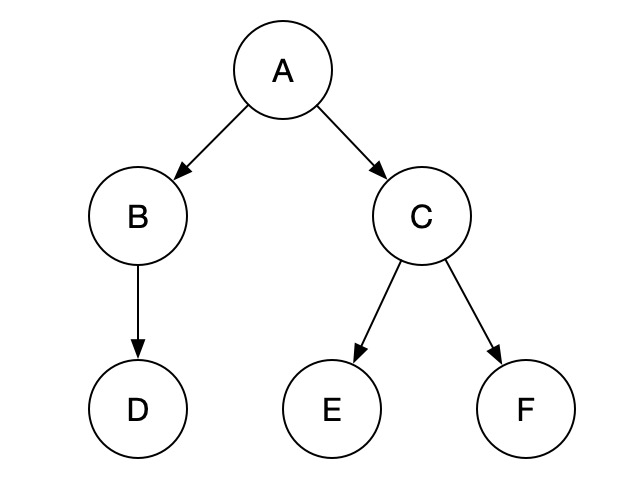
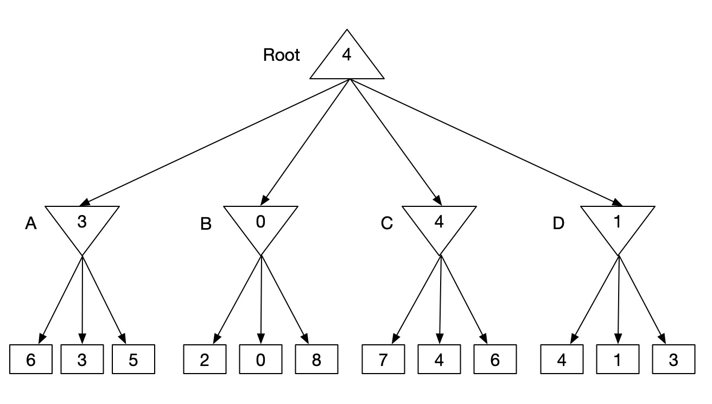
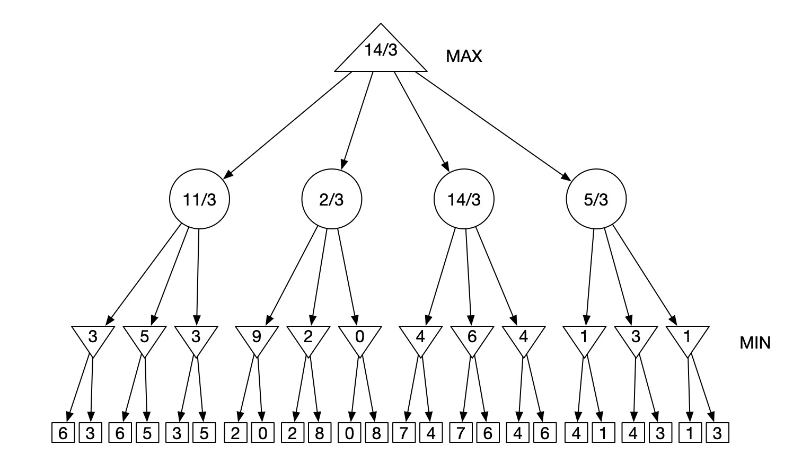
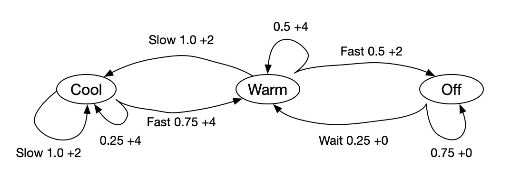

<!DOCTYPE html><html><head>
      <title>hw2</title>
      <meta charset="utf-8">
      <meta name="viewport" content="width=device-width, initial-scale=1.0">
      
      <link rel="stylesheet" href="file:////Users/yanhaoyu/.vscode/extensions/shd101wyy.markdown-preview-enhanced-0.3.8/node_modules/@shd101wyy/mume/dependencies/katex/katex.min.css">
      
      
      
      
      
      
      
      
      

      <style> 
      /**
 * prism.js Github theme based on GitHub's theme.
 * @author Sam Clarke
 */
code[class*="language-"],
pre[class*="language-"] {
  color: #333;
  background: none;
  font-family: Consolas, "Liberation Mono", Menlo, Courier, monospace;
  text-align: left;
  white-space: pre;
  word-spacing: normal;
  word-break: normal;
  word-wrap: normal;
  line-height: 1.4;

  -moz-tab-size: 8;
  -o-tab-size: 8;
  tab-size: 8;

  -webkit-hyphens: none;
  -moz-hyphens: none;
  -ms-hyphens: none;
  hyphens: none;
}

/* Code blocks */
pre[class*="language-"] {
  padding: .8em;
  overflow: auto;
  /* border: 1px solid #ddd; */
  border-radius: 3px;
  /* background: #fff; */
  background: #f5f5f5;
}

/* Inline code */
:not(pre) > code[class*="language-"] {
  padding: .1em;
  border-radius: .3em;
  white-space: normal;
  background: #f5f5f5;
}

.token.comment,
.token.blockquote {
  color: #969896;
}

.token.cdata {
  color: #183691;
}

.token.doctype,
.token.punctuation,
.token.variable,
.token.macro.property {
  color: #333;
}

.token.operator,
.token.important,
.token.keyword,
.token.rule,
.token.builtin {
  color: #a71d5d;
}

.token.string,
.token.url,
.token.regex,
.token.attr-value {
  color: #183691;
}

.token.property,
.token.number,
.token.boolean,
.token.entity,
.token.atrule,
.token.constant,
.token.symbol,
.token.command,
.token.code {
  color: #0086b3;
}

.token.tag,
.token.selector,
.token.prolog {
  color: #63a35c;
}

.token.function,
.token.namespace,
.token.pseudo-element,
.token.class,
.token.class-name,
.token.pseudo-class,
.token.id,
.token.url-reference .token.variable,
.token.attr-name {
  color: #795da3;
}

.token.entity {
  cursor: help;
}

.token.title,
.token.title .token.punctuation {
  font-weight: bold;
  color: #1d3e81;
}

.token.list {
  color: #ed6a43;
}

.token.inserted {
  background-color: #eaffea;
  color: #55a532;
}

.token.deleted {
  background-color: #ffecec;
  color: #bd2c00;
}

.token.bold {
  font-weight: bold;
}

.token.italic {
  font-style: italic;
}


/* JSON */
.language-json .token.property {
  color: #183691;
}

.language-markup .token.tag .token.punctuation {
  color: #333;
}

/* CSS */
code.language-css,
.language-css .token.function {
  color: #0086b3;
}

/* YAML */
.language-yaml .token.atrule {
  color: #63a35c;
}

code.language-yaml {
  color: #183691;
}

/* Ruby */
.language-ruby .token.function {
  color: #333;
}

/* Markdown */
.language-markdown .token.url {
  color: #795da3;
}

/* Makefile */
.language-makefile .token.symbol {
  color: #795da3;
}

.language-makefile .token.variable {
  color: #183691;
}

.language-makefile .token.builtin {
  color: #0086b3;
}

/* Bash */
.language-bash .token.keyword {
  color: #0086b3;
}html body{font-family:"Helvetica Neue",Helvetica,"Segoe UI",Arial,freesans,sans-serif;font-size:16px;line-height:1.6;color:#333;background-color:#fff;overflow:initial;box-sizing:border-box;word-wrap:break-word}html body>:first-child{margin-top:0}html body h1,html body h2,html body h3,html body h4,html body h5,html body h6{line-height:1.2;margin-top:1em;margin-bottom:16px;color:#000}html body h1{font-size:2.25em;font-weight:300;padding-bottom:.3em}html body h2{font-size:1.75em;font-weight:400;padding-bottom:.3em}html body h3{font-size:1.5em;font-weight:500}html body h4{font-size:1.25em;font-weight:600}html body h5{font-size:1.1em;font-weight:600}html body h6{font-size:1em;font-weight:600}html body h1,html body h2,html body h3,html body h4,html body h5{font-weight:600}html body h5{font-size:1em}html body h6{color:#5c5c5c}html body strong{color:#000}html body del{color:#5c5c5c}html body a:not([href]){color:inherit;text-decoration:none}html body a{color:#08c;text-decoration:none}html body a:hover{color:#00a3f5;text-decoration:none}html body img{max-width:100%}html body>p{margin-top:0;margin-bottom:16px;word-wrap:break-word}html body>ul,html body>ol{margin-bottom:16px}html body ul,html body ol{padding-left:2em}html body ul.no-list,html body ol.no-list{padding:0;list-style-type:none}html body ul ul,html body ul ol,html body ol ol,html body ol ul{margin-top:0;margin-bottom:0}html body li{margin-bottom:0}html body li.task-list-item{list-style:none}html body li>p{margin-top:0;margin-bottom:0}html body .task-list-item-checkbox{margin:0 .2em .25em -1.8em;vertical-align:middle}html body .task-list-item-checkbox:hover{cursor:pointer}html body blockquote{margin:16px 0;font-size:inherit;padding:0 15px;color:#5c5c5c;border-left:4px solid #d6d6d6}html body blockquote>:first-child{margin-top:0}html body blockquote>:last-child{margin-bottom:0}html body hr{height:4px;margin:32px 0;background-color:#d6d6d6;border:0 none}html body table{margin:10px 0 15px 0;border-collapse:collapse;border-spacing:0;display:block;width:100%;overflow:auto;word-break:normal;word-break:keep-all}html body table th{font-weight:bold;color:#000}html body table td,html body table th{border:1px solid #d6d6d6;padding:6px 13px}html body dl{padding:0}html body dl dt{padding:0;margin-top:16px;font-size:1em;font-style:italic;font-weight:bold}html body dl dd{padding:0 16px;margin-bottom:16px}html body code{font-family:Menlo,Monaco,Consolas,'Courier New',monospace;font-size:.85em !important;color:#000;background-color:#f0f0f0;border-radius:3px;padding:.2em 0}html body code::before,html body code::after{letter-spacing:-0.2em;content:"\00a0"}html body pre>code{padding:0;margin:0;font-size:.85em !important;word-break:normal;white-space:pre;background:transparent;border:0}html body .highlight{margin-bottom:16px}html body .highlight pre,html body pre{padding:1em;overflow:auto;font-size:.85em !important;line-height:1.45;border:#d6d6d6;border-radius:3px}html body .highlight pre{margin-bottom:0;word-break:normal}html body pre code,html body pre tt{display:inline;max-width:initial;padding:0;margin:0;overflow:initial;line-height:inherit;word-wrap:normal;background-color:transparent;border:0}html body pre code:before,html body pre tt:before,html body pre code:after,html body pre tt:after{content:normal}html body p,html body blockquote,html body ul,html body ol,html body dl,html body pre{margin-top:0;margin-bottom:16px}html body kbd{color:#000;border:1px solid #d6d6d6;border-bottom:2px solid #c7c7c7;padding:2px 4px;background-color:#f0f0f0;border-radius:3px}@media print{html body{background-color:#fff}html body h1,html body h2,html body h3,html body h4,html body h5,html body h6{color:#000;page-break-after:avoid}html body blockquote{color:#5c5c5c}html body pre{page-break-inside:avoid}html body table{display:table}html body img{display:block;max-width:100%;max-height:100%}html body pre,html body code{word-wrap:break-word;white-space:pre}}.markdown-preview{width:100%;height:100%;box-sizing:border-box}.markdown-preview .pagebreak,.markdown-preview .newpage{page-break-before:always}.markdown-preview pre.line-numbers{position:relative;padding-left:3.8em;counter-reset:linenumber}.markdown-preview pre.line-numbers>code{position:relative}.markdown-preview pre.line-numbers .line-numbers-rows{position:absolute;pointer-events:none;top:1em;font-size:100%;left:0;width:3em;letter-spacing:-1px;border-right:1px solid #999;-webkit-user-select:none;-moz-user-select:none;-ms-user-select:none;user-select:none}.markdown-preview pre.line-numbers .line-numbers-rows>span{pointer-events:none;display:block;counter-increment:linenumber}.markdown-preview pre.line-numbers .line-numbers-rows>span:before{content:counter(linenumber);color:#999;display:block;padding-right:.8em;text-align:right}.markdown-preview .mathjax-exps .MathJax_Display{text-align:center !important}.markdown-preview:not([for="preview"]) .code-chunk .btn-group{display:none}.markdown-preview:not([for="preview"]) .code-chunk .status{display:none}.markdown-preview:not([for="preview"]) .code-chunk .output-div{margin-bottom:16px}.scrollbar-style::-webkit-scrollbar{width:8px}.scrollbar-style::-webkit-scrollbar-track{border-radius:10px;background-color:transparent}.scrollbar-style::-webkit-scrollbar-thumb{border-radius:5px;background-color:rgba(150,150,150,0.66);border:4px solid rgba(150,150,150,0.66);background-clip:content-box}html body[for="html-export"]:not([data-presentation-mode]){position:relative;width:100%;height:100%;top:0;left:0;margin:0;padding:0;overflow:auto}html body[for="html-export"]:not([data-presentation-mode]) .markdown-preview{position:relative;top:0}@media screen and (min-width:914px){html body[for="html-export"]:not([data-presentation-mode]) .markdown-preview{padding:2em calc(50% - 457px)}}@media screen and (max-width:914px){html body[for="html-export"]:not([data-presentation-mode]) .markdown-preview{padding:2em}}@media screen and (max-width:450px){html body[for="html-export"]:not([data-presentation-mode]) .markdown-preview{font-size:14px !important;padding:1em}}@media print{html body[for="html-export"]:not([data-presentation-mode]) #sidebar-toc-btn{display:none}}html body[for="html-export"]:not([data-presentation-mode]) #sidebar-toc-btn{position:fixed;bottom:8px;left:8px;font-size:28px;cursor:pointer;color:inherit;z-index:99;width:32px;text-align:center;opacity:.4}html body[for="html-export"]:not([data-presentation-mode])[html-show-sidebar-toc] #sidebar-toc-btn{opacity:1}html body[for="html-export"]:not([data-presentation-mode])[html-show-sidebar-toc] .md-sidebar-toc{position:fixed;top:0;left:0;width:300px;height:100%;padding:32px 0 48px 0;font-size:14px;box-shadow:0 0 4px rgba(150,150,150,0.33);box-sizing:border-box;overflow:auto;background-color:inherit}html body[for="html-export"]:not([data-presentation-mode])[html-show-sidebar-toc] .md-sidebar-toc::-webkit-scrollbar{width:8px}html body[for="html-export"]:not([data-presentation-mode])[html-show-sidebar-toc] .md-sidebar-toc::-webkit-scrollbar-track{border-radius:10px;background-color:transparent}html body[for="html-export"]:not([data-presentation-mode])[html-show-sidebar-toc] .md-sidebar-toc::-webkit-scrollbar-thumb{border-radius:5px;background-color:rgba(150,150,150,0.66);border:4px solid rgba(150,150,150,0.66);background-clip:content-box}html body[for="html-export"]:not([data-presentation-mode])[html-show-sidebar-toc] .md-sidebar-toc a{text-decoration:none}html body[for="html-export"]:not([data-presentation-mode])[html-show-sidebar-toc] .md-sidebar-toc ul{padding:0 1.6em;margin-top:.8em}html body[for="html-export"]:not([data-presentation-mode])[html-show-sidebar-toc] .md-sidebar-toc li{margin-bottom:.8em}html body[for="html-export"]:not([data-presentation-mode])[html-show-sidebar-toc] .md-sidebar-toc ul{list-style-type:none}html body[for="html-export"]:not([data-presentation-mode])[html-show-sidebar-toc] .markdown-preview{left:300px;width:calc(100% -  300px);padding:2em calc(50% - 457px -  150px);margin:0;box-sizing:border-box}@media screen and (max-width:1274px){html body[for="html-export"]:not([data-presentation-mode])[html-show-sidebar-toc] .markdown-preview{padding:2em}}@media screen and (max-width:450px){html body[for="html-export"]:not([data-presentation-mode])[html-show-sidebar-toc] .markdown-preview{width:100%}}html body[for="html-export"]:not([data-presentation-mode]):not([html-show-sidebar-toc]) .markdown-preview{left:50%;transform:translateX(-50%)}html body[for="html-export"]:not([data-presentation-mode]):not([html-show-sidebar-toc]) .md-sidebar-toc{display:none}
/* Please visit the URL below for more information: */
/*   https://shd101wyy.github.io/markdown-preview-enhanced/#/customize-css */
 
      </style>
    </head>
    <body for="html-export">
      <div class="mume markdown-preview   ">
      <h1 class="mume-header" id="homework-2">Homework 2</h1>

<h2 class="mume-header" id="part-1-graph-or-tree">Part 1: Graph or Tree</h2>

<ol>
<li></li>
</ol>
<p></p>
<ol start="2">
<li>
<p>A: {2} B: {1, 2} C: {1} D: {1, 2} E: {0, 1, 2} F: {1, 2}</p>
</li>
<li>
<p>C=1<br>
If (C,E,F)=(2,2,2), there is a conflict that E should be greater than C, So we reassign C&#xFF0C; there are two options 0 and 1. If we choose C=0, then it conflicts that C&gt;=F, but F!=G, so if G=0 we can&apos;t assign F right. But if we assign C=1, F could be 0 or 1, no matter what G is there is at least one choice for F to be assigned. So based on the LCV heuristics, we should reassign C=1.</p>
</li>
</ol>
<h2 class="mume-header" id="part-2-boring-matrix-game">Part 2: Boring Matrix &quot;Game&quot;</h2>

<ol>
<li></li>
</ol>
<p></p>
<ol start="2">
<li>
<table>
<thead>
<tr>
<th>step</th>
<th>node</th>
<th><span class="katex"><span class="katex-mathml"><math><semantics><mrow><mi>&#x3B1;</mi></mrow><annotation encoding="application/x-tex">\alpha</annotation></semantics></math></span><span class="katex-html" aria-hidden="true"><span class="base"><span class="strut" style="height:0.43056em;vertical-align:0em;"></span><span class="mord mathit" style="margin-right:0.0037em;">&#x3B1;</span></span></span></span></th>
<th><span class="katex"><span class="katex-mathml"><math><semantics><mrow><mi>&#x3B2;</mi></mrow><annotation encoding="application/x-tex">\beta</annotation></semantics></math></span><span class="katex-html" aria-hidden="true"><span class="base"><span class="strut" style="height:0.8888799999999999em;vertical-align:-0.19444em;"></span><span class="mord mathit" style="margin-right:0.05278em;">&#x3B2;</span></span></span></span></th>
<th>value</th>
<th>children skipped</th>
</tr>
</thead>
<tbody>
<tr>
<td>1</td>
<td>Root</td>
<td><span class="katex"><span class="katex-mathml"><math><semantics><mrow><mo>&#x2212;</mo><mi mathvariant="normal">&#x221E;</mi></mrow><annotation encoding="application/x-tex">-\infty</annotation></semantics></math></span><span class="katex-html" aria-hidden="true"><span class="base"><span class="strut" style="height:0.66666em;vertical-align:-0.08333em;"></span><span class="mord">&#x2212;</span><span class="mord">&#x221E;</span></span></span></span></td>
<td><span class="katex"><span class="katex-mathml"><math><semantics><mrow><mi mathvariant="normal">&#x221E;</mi></mrow><annotation encoding="application/x-tex">\infty</annotation></semantics></math></span><span class="katex-html" aria-hidden="true"><span class="base"><span class="strut" style="height:0.43056em;vertical-align:0em;"></span><span class="mord">&#x221E;</span></span></span></span></td>
<td>4</td>
<td>-</td>
</tr>
<tr>
<td>2</td>
<td>A</td>
<td><span class="katex"><span class="katex-mathml"><math><semantics><mrow><mo>&#x2212;</mo><mi mathvariant="normal">&#x221E;</mi></mrow><annotation encoding="application/x-tex">-\infty</annotation></semantics></math></span><span class="katex-html" aria-hidden="true"><span class="base"><span class="strut" style="height:0.66666em;vertical-align:-0.08333em;"></span><span class="mord">&#x2212;</span><span class="mord">&#x221E;</span></span></span></span></td>
<td><span class="katex"><span class="katex-mathml"><math><semantics><mrow><mi mathvariant="normal">&#x221E;</mi></mrow><annotation encoding="application/x-tex">\infty</annotation></semantics></math></span><span class="katex-html" aria-hidden="true"><span class="base"><span class="strut" style="height:0.43056em;vertical-align:0em;"></span><span class="mord">&#x221E;</span></span></span></span></td>
<td>3</td>
<td>-</td>
</tr>
<tr>
<td>3</td>
<td>6</td>
<td><span class="katex"><span class="katex-mathml"><math><semantics><mrow><mo>&#x2212;</mo><mi mathvariant="normal">&#x221E;</mi></mrow><annotation encoding="application/x-tex">-\infty</annotation></semantics></math></span><span class="katex-html" aria-hidden="true"><span class="base"><span class="strut" style="height:0.66666em;vertical-align:-0.08333em;"></span><span class="mord">&#x2212;</span><span class="mord">&#x221E;</span></span></span></span></td>
<td><span class="katex"><span class="katex-mathml"><math><semantics><mrow><mi mathvariant="normal">&#x221E;</mi></mrow><annotation encoding="application/x-tex">\infty</annotation></semantics></math></span><span class="katex-html" aria-hidden="true"><span class="base"><span class="strut" style="height:0.43056em;vertical-align:0em;"></span><span class="mord">&#x221E;</span></span></span></span></td>
<td>6</td>
<td>-</td>
</tr>
<tr>
<td>4</td>
<td>3</td>
<td><span class="katex"><span class="katex-mathml"><math><semantics><mrow><mo>&#x2212;</mo><mi mathvariant="normal">&#x221E;</mi></mrow><annotation encoding="application/x-tex">-\infty</annotation></semantics></math></span><span class="katex-html" aria-hidden="true"><span class="base"><span class="strut" style="height:0.66666em;vertical-align:-0.08333em;"></span><span class="mord">&#x2212;</span><span class="mord">&#x221E;</span></span></span></span></td>
<td>6</td>
<td>3</td>
<td>-</td>
</tr>
<tr>
<td>5</td>
<td>5</td>
<td><span class="katex"><span class="katex-mathml"><math><semantics><mrow><mo>&#x2212;</mo><mi mathvariant="normal">&#x221E;</mi></mrow><annotation encoding="application/x-tex">-\infty</annotation></semantics></math></span><span class="katex-html" aria-hidden="true"><span class="base"><span class="strut" style="height:0.66666em;vertical-align:-0.08333em;"></span><span class="mord">&#x2212;</span><span class="mord">&#x221E;</span></span></span></span></td>
<td>3</td>
<td>5</td>
<td>-</td>
</tr>
<tr>
<td>6</td>
<td>B</td>
<td>3</td>
<td><span class="katex"><span class="katex-mathml"><math><semantics><mrow><mi mathvariant="normal">&#x221E;</mi></mrow><annotation encoding="application/x-tex">\infty</annotation></semantics></math></span><span class="katex-html" aria-hidden="true"><span class="base"><span class="strut" style="height:0.43056em;vertical-align:0em;"></span><span class="mord">&#x221E;</span></span></span></span></td>
<td>0</td>
<td>-</td>
</tr>
<tr>
<td>7</td>
<td>2</td>
<td>3</td>
<td><span class="katex"><span class="katex-mathml"><math><semantics><mrow><mi mathvariant="normal">&#x221E;</mi></mrow><annotation encoding="application/x-tex">\infty</annotation></semantics></math></span><span class="katex-html" aria-hidden="true"><span class="base"><span class="strut" style="height:0.43056em;vertical-align:0em;"></span><span class="mord">&#x221E;</span></span></span></span></td>
<td>2</td>
<td>0,8</td>
</tr>
<tr>
<td>8</td>
<td>C</td>
<td>3</td>
<td><span class="katex"><span class="katex-mathml"><math><semantics><mrow><mi mathvariant="normal">&#x221E;</mi></mrow><annotation encoding="application/x-tex">\infty</annotation></semantics></math></span><span class="katex-html" aria-hidden="true"><span class="base"><span class="strut" style="height:0.43056em;vertical-align:0em;"></span><span class="mord">&#x221E;</span></span></span></span></td>
<td>4</td>
<td>-</td>
</tr>
<tr>
<td>9</td>
<td>7</td>
<td>3</td>
<td><span class="katex"><span class="katex-mathml"><math><semantics><mrow><mi mathvariant="normal">&#x221E;</mi></mrow><annotation encoding="application/x-tex">\infty</annotation></semantics></math></span><span class="katex-html" aria-hidden="true"><span class="base"><span class="strut" style="height:0.43056em;vertical-align:0em;"></span><span class="mord">&#x221E;</span></span></span></span></td>
<td>7</td>
<td>-</td>
</tr>
<tr>
<td>10</td>
<td>4</td>
<td>3</td>
<td>7</td>
<td>4</td>
<td>-</td>
</tr>
<tr>
<td>11</td>
<td>6</td>
<td>3</td>
<td>4</td>
<td>4</td>
<td>-</td>
</tr>
<tr>
<td>12</td>
<td>D</td>
<td>3</td>
<td><span class="katex"><span class="katex-mathml"><math><semantics><mrow><mi mathvariant="normal">&#x221E;</mi></mrow><annotation encoding="application/x-tex">\infty</annotation></semantics></math></span><span class="katex-html" aria-hidden="true"><span class="base"><span class="strut" style="height:0.43056em;vertical-align:0em;"></span><span class="mord">&#x221E;</span></span></span></span></td>
<td>1</td>
<td>-</td>
</tr>
<tr>
<td>13</td>
<td>D</td>
<td>4</td>
<td><span class="katex"><span class="katex-mathml"><math><semantics><mrow><mi mathvariant="normal">&#x221E;</mi></mrow><annotation encoding="application/x-tex">\infty</annotation></semantics></math></span><span class="katex-html" aria-hidden="true"><span class="base"><span class="strut" style="height:0.43056em;vertical-align:0em;"></span><span class="mord">&#x221E;</span></span></span></span></td>
<td>4</td>
<td>1,3</td>
</tr>
</tbody>
</table>
So the player A should choose the third row.</li>
<li></li>
</ol>
<p><br>
A should choose the third row, and the expected game value is <span class="katex"><span class="katex-mathml"><math><semantics><mrow><mn>14</mn><mi mathvariant="normal">/</mi><mn>3</mn></mrow><annotation encoding="application/x-tex">14/3</annotation></semantics></math></span><span class="katex-html" aria-hidden="true"><span class="base"><span class="strut" style="height:1em;vertical-align:-0.25em;"></span><span class="mord">1</span><span class="mord">4</span><span class="mord">/</span><span class="mord">3</span></span></span></span>.</p>
<h2 class="mume-header" id="part-3-immortal-race-car">Part 3: Immortal Race Car</h2>

<ol>
<li></li>
</ol>
<p></p>
<ol start="2">
<li>
<p><span class="katex"><span class="katex-mathml"><math><semantics><mrow><msup><mi>V</mi><mi>&#x3C0;</mi></msup><mo>(</mo><mi>C</mi><mi>o</mi><mi>o</mi><mi>l</mi><mo>)</mo><mo>=</mo><mn>1</mn><mo>&#xD7;</mo><mo>(</mo><mn>2</mn><mo>+</mo><mn>0.8</mn><mo>(</mo><msup><mi>V</mi><mi>&#x3C0;</mi></msup><mo>(</mo><mi>C</mi><mi>o</mi><mi>o</mi><mi>l</mi><mo>)</mo><mo>)</mo></mrow><annotation encoding="application/x-tex">V^{\pi}(Cool)= 1 \times(2+0.8(V^{\pi}(Cool))</annotation></semantics></math></span><span class="katex-html" aria-hidden="true"><span class="base"><span class="strut" style="height:1em;vertical-align:-0.25em;"></span><span class="mord"><span class="mord mathit" style="margin-right:0.22222em;">V</span><span class="msupsub"><span class="vlist-t"><span class="vlist-r"><span class="vlist" style="height:0.664392em;"><span style="top:-3.063em;margin-right:0.05em;"><span class="pstrut" style="height:2.7em;"></span><span class="sizing reset-size6 size3 mtight"><span class="mord mtight"><span class="mord mathit mtight" style="margin-right:0.03588em;">&#x3C0;</span></span></span></span></span></span></span></span></span><span class="mopen">(</span><span class="mord mathit" style="margin-right:0.07153em;">C</span><span class="mord mathit">o</span><span class="mord mathit">o</span><span class="mord mathit" style="margin-right:0.01968em;">l</span><span class="mclose">)</span><span class="mspace" style="margin-right:0.2777777777777778em;"></span><span class="mrel">=</span><span class="mspace" style="margin-right:0.2777777777777778em;"></span></span><span class="base"><span class="strut" style="height:0.72777em;vertical-align:-0.08333em;"></span><span class="mord">1</span><span class="mspace" style="margin-right:0.2222222222222222em;"></span><span class="mbin">&#xD7;</span><span class="mspace" style="margin-right:0.2222222222222222em;"></span></span><span class="base"><span class="strut" style="height:1em;vertical-align:-0.25em;"></span><span class="mopen">(</span><span class="mord">2</span><span class="mspace" style="margin-right:0.2222222222222222em;"></span><span class="mbin">+</span><span class="mspace" style="margin-right:0.2222222222222222em;"></span></span><span class="base"><span class="strut" style="height:1em;vertical-align:-0.25em;"></span><span class="mord">0</span><span class="mord">.</span><span class="mord">8</span><span class="mopen">(</span><span class="mord"><span class="mord mathit" style="margin-right:0.22222em;">V</span><span class="msupsub"><span class="vlist-t"><span class="vlist-r"><span class="vlist" style="height:0.664392em;"><span style="top:-3.063em;margin-right:0.05em;"><span class="pstrut" style="height:2.7em;"></span><span class="sizing reset-size6 size3 mtight"><span class="mord mtight"><span class="mord mathit mtight" style="margin-right:0.03588em;">&#x3C0;</span></span></span></span></span></span></span></span></span><span class="mopen">(</span><span class="mord mathit" style="margin-right:0.07153em;">C</span><span class="mord mathit">o</span><span class="mord mathit">o</span><span class="mord mathit" style="margin-right:0.01968em;">l</span><span class="mclose">)</span><span class="mclose">)</span></span></span></span><br>
<span class="katex"><span class="katex-mathml"><math><semantics><mrow><msup><mi>V</mi><mi>&#x3C0;</mi></msup><mo>(</mo><mi>W</mi><mi>a</mi><mi>r</mi><mi>m</mi><mo>)</mo><mo>=</mo><mn>1</mn><mo>&#xD7;</mo><mo>(</mo><mn>2</mn><mo>+</mo><mn>0.8</mn><mo>(</mo><msup><mi>V</mi><mi>&#x3C0;</mi></msup><mo>(</mo><mi>C</mi><mi>o</mi><mi>o</mi><mi>l</mi><mo>)</mo><mo>)</mo></mrow><annotation encoding="application/x-tex">V^{\pi}(Warm)= 1 \times(2+0.8(V^{\pi}(Cool))</annotation></semantics></math></span><span class="katex-html" aria-hidden="true"><span class="base"><span class="strut" style="height:1em;vertical-align:-0.25em;"></span><span class="mord"><span class="mord mathit" style="margin-right:0.22222em;">V</span><span class="msupsub"><span class="vlist-t"><span class="vlist-r"><span class="vlist" style="height:0.664392em;"><span style="top:-3.063em;margin-right:0.05em;"><span class="pstrut" style="height:2.7em;"></span><span class="sizing reset-size6 size3 mtight"><span class="mord mtight"><span class="mord mathit mtight" style="margin-right:0.03588em;">&#x3C0;</span></span></span></span></span></span></span></span></span><span class="mopen">(</span><span class="mord mathit" style="margin-right:0.13889em;">W</span><span class="mord mathit">a</span><span class="mord mathit" style="margin-right:0.02778em;">r</span><span class="mord mathit">m</span><span class="mclose">)</span><span class="mspace" style="margin-right:0.2777777777777778em;"></span><span class="mrel">=</span><span class="mspace" style="margin-right:0.2777777777777778em;"></span></span><span class="base"><span class="strut" style="height:0.72777em;vertical-align:-0.08333em;"></span><span class="mord">1</span><span class="mspace" style="margin-right:0.2222222222222222em;"></span><span class="mbin">&#xD7;</span><span class="mspace" style="margin-right:0.2222222222222222em;"></span></span><span class="base"><span class="strut" style="height:1em;vertical-align:-0.25em;"></span><span class="mopen">(</span><span class="mord">2</span><span class="mspace" style="margin-right:0.2222222222222222em;"></span><span class="mbin">+</span><span class="mspace" style="margin-right:0.2222222222222222em;"></span></span><span class="base"><span class="strut" style="height:1em;vertical-align:-0.25em;"></span><span class="mord">0</span><span class="mord">.</span><span class="mord">8</span><span class="mopen">(</span><span class="mord"><span class="mord mathit" style="margin-right:0.22222em;">V</span><span class="msupsub"><span class="vlist-t"><span class="vlist-r"><span class="vlist" style="height:0.664392em;"><span style="top:-3.063em;margin-right:0.05em;"><span class="pstrut" style="height:2.7em;"></span><span class="sizing reset-size6 size3 mtight"><span class="mord mtight"><span class="mord mathit mtight" style="margin-right:0.03588em;">&#x3C0;</span></span></span></span></span></span></span></span></span><span class="mopen">(</span><span class="mord mathit" style="margin-right:0.07153em;">C</span><span class="mord mathit">o</span><span class="mord mathit">o</span><span class="mord mathit" style="margin-right:0.01968em;">l</span><span class="mclose">)</span><span class="mclose">)</span></span></span></span><br>
<span class="katex"><span class="katex-mathml"><math><semantics><mrow><msup><mi>V</mi><mi>&#x3C0;</mi></msup><mo>(</mo><mi>O</mi><mi>f</mi><mi>f</mi><mo>)</mo><mo>=</mo><mn>0.25</mn><mo>&#xD7;</mo><mo>(</mo><mn>0</mn><mo>+</mo><mn>0.8</mn><mo>(</mo><msup><mi>V</mi><mi>&#x3C0;</mi></msup><mo>(</mo><mi>W</mi><mi>a</mi><mi>r</mi><mi>m</mi><mo>)</mo><mo>)</mo><mo>+</mo><mn>0.75</mn><mo>&#xD7;</mo><mo>(</mo><mn>0</mn><mo>+</mo><mn>0.8</mn><mo>(</mo><msup><mi>V</mi><mi>&#x3C0;</mi></msup><mo>(</mo><mi>W</mi><mi>a</mi><mi>r</mi><mi>m</mi><mo>)</mo><mo>)</mo></mrow><annotation encoding="application/x-tex">V^{\pi}(Off)= 0.25 \times(0+0.8(V^{\pi}(Warm))+0.75 \times (0+0.8(V^{\pi}(Warm))</annotation></semantics></math></span><span class="katex-html" aria-hidden="true"><span class="base"><span class="strut" style="height:1em;vertical-align:-0.25em;"></span><span class="mord"><span class="mord mathit" style="margin-right:0.22222em;">V</span><span class="msupsub"><span class="vlist-t"><span class="vlist-r"><span class="vlist" style="height:0.664392em;"><span style="top:-3.063em;margin-right:0.05em;"><span class="pstrut" style="height:2.7em;"></span><span class="sizing reset-size6 size3 mtight"><span class="mord mtight"><span class="mord mathit mtight" style="margin-right:0.03588em;">&#x3C0;</span></span></span></span></span></span></span></span></span><span class="mopen">(</span><span class="mord mathit" style="margin-right:0.02778em;">O</span><span class="mord mathit" style="margin-right:0.10764em;">f</span><span class="mord mathit" style="margin-right:0.10764em;">f</span><span class="mclose">)</span><span class="mspace" style="margin-right:0.2777777777777778em;"></span><span class="mrel">=</span><span class="mspace" style="margin-right:0.2777777777777778em;"></span></span><span class="base"><span class="strut" style="height:0.72777em;vertical-align:-0.08333em;"></span><span class="mord">0</span><span class="mord">.</span><span class="mord">2</span><span class="mord">5</span><span class="mspace" style="margin-right:0.2222222222222222em;"></span><span class="mbin">&#xD7;</span><span class="mspace" style="margin-right:0.2222222222222222em;"></span></span><span class="base"><span class="strut" style="height:1em;vertical-align:-0.25em;"></span><span class="mopen">(</span><span class="mord">0</span><span class="mspace" style="margin-right:0.2222222222222222em;"></span><span class="mbin">+</span><span class="mspace" style="margin-right:0.2222222222222222em;"></span></span><span class="base"><span class="strut" style="height:1em;vertical-align:-0.25em;"></span><span class="mord">0</span><span class="mord">.</span><span class="mord">8</span><span class="mopen">(</span><span class="mord"><span class="mord mathit" style="margin-right:0.22222em;">V</span><span class="msupsub"><span class="vlist-t"><span class="vlist-r"><span class="vlist" style="height:0.664392em;"><span style="top:-3.063em;margin-right:0.05em;"><span class="pstrut" style="height:2.7em;"></span><span class="sizing reset-size6 size3 mtight"><span class="mord mtight"><span class="mord mathit mtight" style="margin-right:0.03588em;">&#x3C0;</span></span></span></span></span></span></span></span></span><span class="mopen">(</span><span class="mord mathit" style="margin-right:0.13889em;">W</span><span class="mord mathit">a</span><span class="mord mathit" style="margin-right:0.02778em;">r</span><span class="mord mathit">m</span><span class="mclose">)</span><span class="mclose">)</span><span class="mspace" style="margin-right:0.2222222222222222em;"></span><span class="mbin">+</span><span class="mspace" style="margin-right:0.2222222222222222em;"></span></span><span class="base"><span class="strut" style="height:0.72777em;vertical-align:-0.08333em;"></span><span class="mord">0</span><span class="mord">.</span><span class="mord">7</span><span class="mord">5</span><span class="mspace" style="margin-right:0.2222222222222222em;"></span><span class="mbin">&#xD7;</span><span class="mspace" style="margin-right:0.2222222222222222em;"></span></span><span class="base"><span class="strut" style="height:1em;vertical-align:-0.25em;"></span><span class="mopen">(</span><span class="mord">0</span><span class="mspace" style="margin-right:0.2222222222222222em;"></span><span class="mbin">+</span><span class="mspace" style="margin-right:0.2222222222222222em;"></span></span><span class="base"><span class="strut" style="height:1em;vertical-align:-0.25em;"></span><span class="mord">0</span><span class="mord">.</span><span class="mord">8</span><span class="mopen">(</span><span class="mord"><span class="mord mathit" style="margin-right:0.22222em;">V</span><span class="msupsub"><span class="vlist-t"><span class="vlist-r"><span class="vlist" style="height:0.664392em;"><span style="top:-3.063em;margin-right:0.05em;"><span class="pstrut" style="height:2.7em;"></span><span class="sizing reset-size6 size3 mtight"><span class="mord mtight"><span class="mord mathit mtight" style="margin-right:0.03588em;">&#x3C0;</span></span></span></span></span></span></span></span></span><span class="mopen">(</span><span class="mord mathit" style="margin-right:0.13889em;">W</span><span class="mord mathit">a</span><span class="mord mathit" style="margin-right:0.02778em;">r</span><span class="mord mathit">m</span><span class="mclose">)</span><span class="mclose">)</span></span></span></span><br>
Solve the equations above, we can get:<br>
<span class="katex"><span class="katex-mathml"><math><semantics><mrow><msup><mi>V</mi><mi>&#x3C0;</mi></msup><mo>(</mo><mi>C</mi><mi>o</mi><mi>o</mi><mi>l</mi><mo>)</mo><mo>=</mo><mn>10</mn></mrow><annotation encoding="application/x-tex">V^{\pi}(Cool)=10</annotation></semantics></math></span><span class="katex-html" aria-hidden="true"><span class="base"><span class="strut" style="height:1em;vertical-align:-0.25em;"></span><span class="mord"><span class="mord mathit" style="margin-right:0.22222em;">V</span><span class="msupsub"><span class="vlist-t"><span class="vlist-r"><span class="vlist" style="height:0.664392em;"><span style="top:-3.063em;margin-right:0.05em;"><span class="pstrut" style="height:2.7em;"></span><span class="sizing reset-size6 size3 mtight"><span class="mord mtight"><span class="mord mathit mtight" style="margin-right:0.03588em;">&#x3C0;</span></span></span></span></span></span></span></span></span><span class="mopen">(</span><span class="mord mathit" style="margin-right:0.07153em;">C</span><span class="mord mathit">o</span><span class="mord mathit">o</span><span class="mord mathit" style="margin-right:0.01968em;">l</span><span class="mclose">)</span><span class="mspace" style="margin-right:0.2777777777777778em;"></span><span class="mrel">=</span><span class="mspace" style="margin-right:0.2777777777777778em;"></span></span><span class="base"><span class="strut" style="height:0.64444em;vertical-align:0em;"></span><span class="mord">1</span><span class="mord">0</span></span></span></span><br>
<span class="katex"><span class="katex-mathml"><math><semantics><mrow><msup><mi>V</mi><mi>&#x3C0;</mi></msup><mo>(</mo><mi>W</mi><mi>a</mi><mi>r</mi><mi>m</mi><mo>)</mo><mo>=</mo><mn>10</mn></mrow><annotation encoding="application/x-tex">V^{\pi}(Warm)=10</annotation></semantics></math></span><span class="katex-html" aria-hidden="true"><span class="base"><span class="strut" style="height:1em;vertical-align:-0.25em;"></span><span class="mord"><span class="mord mathit" style="margin-right:0.22222em;">V</span><span class="msupsub"><span class="vlist-t"><span class="vlist-r"><span class="vlist" style="height:0.664392em;"><span style="top:-3.063em;margin-right:0.05em;"><span class="pstrut" style="height:2.7em;"></span><span class="sizing reset-size6 size3 mtight"><span class="mord mtight"><span class="mord mathit mtight" style="margin-right:0.03588em;">&#x3C0;</span></span></span></span></span></span></span></span></span><span class="mopen">(</span><span class="mord mathit" style="margin-right:0.13889em;">W</span><span class="mord mathit">a</span><span class="mord mathit" style="margin-right:0.02778em;">r</span><span class="mord mathit">m</span><span class="mclose">)</span><span class="mspace" style="margin-right:0.2777777777777778em;"></span><span class="mrel">=</span><span class="mspace" style="margin-right:0.2777777777777778em;"></span></span><span class="base"><span class="strut" style="height:0.64444em;vertical-align:0em;"></span><span class="mord">1</span><span class="mord">0</span></span></span></span><br>
<span class="katex"><span class="katex-mathml"><math><semantics><mrow><msup><mi>V</mi><mi>&#x3C0;</mi></msup><mo>(</mo><mi>O</mi><mi>f</mi><mi>f</mi><mo>)</mo><mo>=</mo><mn>5</mn></mrow><annotation encoding="application/x-tex">V^{\pi}(Off)=5</annotation></semantics></math></span><span class="katex-html" aria-hidden="true"><span class="base"><span class="strut" style="height:1em;vertical-align:-0.25em;"></span><span class="mord"><span class="mord mathit" style="margin-right:0.22222em;">V</span><span class="msupsub"><span class="vlist-t"><span class="vlist-r"><span class="vlist" style="height:0.664392em;"><span style="top:-3.063em;margin-right:0.05em;"><span class="pstrut" style="height:2.7em;"></span><span class="sizing reset-size6 size3 mtight"><span class="mord mtight"><span class="mord mathit mtight" style="margin-right:0.03588em;">&#x3C0;</span></span></span></span></span></span></span></span></span><span class="mopen">(</span><span class="mord mathit" style="margin-right:0.02778em;">O</span><span class="mord mathit" style="margin-right:0.10764em;">f</span><span class="mord mathit" style="margin-right:0.10764em;">f</span><span class="mclose">)</span><span class="mspace" style="margin-right:0.2777777777777778em;"></span><span class="mrel">=</span><span class="mspace" style="margin-right:0.2777777777777778em;"></span></span><span class="base"><span class="strut" style="height:0.64444em;vertical-align:0em;"></span><span class="mord">5</span></span></span></span><br>
As for V(Cool) and V(Warm), because no matter the car is cool or warm, the policy just tells it to goes slow, so there is no chance for the car to change from warm to off, so they produce the same result for the car.<br>
As for V(wait), The car just waits to get the chance to be warm again and during the waiting there is no reward for the car, so the value of it is smaller than the other two values.</p>
</li>
<li>
<p><span class="katex"><span class="katex-mathml"><math><semantics><mrow><msubsup><mi>V</mi><mn>1</mn><mi>&#x3C0;</mi></msubsup><mo>(</mo><mi>C</mi><mi>o</mi><mi>o</mi><mi>l</mi><mo>)</mo><mo>=</mo><mi>m</mi><mi>a</mi><mi>x</mi><mo>(</mo><mn>1</mn><mo>&#xD7;</mo><mn>2</mn><mo>+</mo><mn>0.8</mn><mo>&#xD7;</mo><mn>10</mn><mo separator="true">,</mo><mn>0.75</mn><mo>&#xD7;</mo><mo>(</mo><mn>4</mn><mo>+</mo><mn>0.8</mn><mo>&#xD7;</mo><mn>10</mn><mo>)</mo><mo>+</mo><mn>0.25</mn><mo>&#xD7;</mo><mo>(</mo><mn>4</mn><mo>+</mo><mn>0.8</mn><mo>&#xD7;</mo><mn>10</mn><mo>)</mo><mo>)</mo><mo>=</mo><mi>m</mi><mi>a</mi><mi>x</mi><mo>(</mo><mn>10</mn><mo separator="true">,</mo><mn>12</mn><mo>)</mo><mo>=</mo></mrow><annotation encoding="application/x-tex">V^{\pi}_{1}(Cool) = max(1 \times 2+0.8\times 10, 0.75\times (4+0.8\times10)+0.25\times (4+0.8\times10)) = max(10, 12) =</annotation></semantics></math></span><span class="katex-html" aria-hidden="true"><span class="base"><span class="strut" style="height:1em;vertical-align:-0.25em;"></span><span class="mord"><span class="mord mathit" style="margin-right:0.22222em;">V</span><span class="msupsub"><span class="vlist-t vlist-t2"><span class="vlist-r"><span class="vlist" style="height:0.664392em;"><span style="top:-2.4518920000000004em;margin-left:-0.22222em;margin-right:0.05em;"><span class="pstrut" style="height:2.7em;"></span><span class="sizing reset-size6 size3 mtight"><span class="mord mtight"><span class="mord mtight">1</span></span></span></span><span style="top:-3.063em;margin-right:0.05em;"><span class="pstrut" style="height:2.7em;"></span><span class="sizing reset-size6 size3 mtight"><span class="mord mtight"><span class="mord mathit mtight" style="margin-right:0.03588em;">&#x3C0;</span></span></span></span></span><span class="vlist-s">&#x200B;</span></span><span class="vlist-r"><span class="vlist" style="height:0.24810799999999997em;"><span></span></span></span></span></span></span><span class="mopen">(</span><span class="mord mathit" style="margin-right:0.07153em;">C</span><span class="mord mathit">o</span><span class="mord mathit">o</span><span class="mord mathit" style="margin-right:0.01968em;">l</span><span class="mclose">)</span><span class="mspace" style="margin-right:0.2777777777777778em;"></span><span class="mrel">=</span><span class="mspace" style="margin-right:0.2777777777777778em;"></span></span><span class="base"><span class="strut" style="height:1em;vertical-align:-0.25em;"></span><span class="mord mathit">m</span><span class="mord mathit">a</span><span class="mord mathit">x</span><span class="mopen">(</span><span class="mord">1</span><span class="mspace" style="margin-right:0.2222222222222222em;"></span><span class="mbin">&#xD7;</span><span class="mspace" style="margin-right:0.2222222222222222em;"></span></span><span class="base"><span class="strut" style="height:0.72777em;vertical-align:-0.08333em;"></span><span class="mord">2</span><span class="mspace" style="margin-right:0.2222222222222222em;"></span><span class="mbin">+</span><span class="mspace" style="margin-right:0.2222222222222222em;"></span></span><span class="base"><span class="strut" style="height:0.72777em;vertical-align:-0.08333em;"></span><span class="mord">0</span><span class="mord">.</span><span class="mord">8</span><span class="mspace" style="margin-right:0.2222222222222222em;"></span><span class="mbin">&#xD7;</span><span class="mspace" style="margin-right:0.2222222222222222em;"></span></span><span class="base"><span class="strut" style="height:0.8388800000000001em;vertical-align:-0.19444em;"></span><span class="mord">1</span><span class="mord">0</span><span class="mpunct">,</span><span class="mspace" style="margin-right:0.16666666666666666em;"></span><span class="mord">0</span><span class="mord">.</span><span class="mord">7</span><span class="mord">5</span><span class="mspace" style="margin-right:0.2222222222222222em;"></span><span class="mbin">&#xD7;</span><span class="mspace" style="margin-right:0.2222222222222222em;"></span></span><span class="base"><span class="strut" style="height:1em;vertical-align:-0.25em;"></span><span class="mopen">(</span><span class="mord">4</span><span class="mspace" style="margin-right:0.2222222222222222em;"></span><span class="mbin">+</span><span class="mspace" style="margin-right:0.2222222222222222em;"></span></span><span class="base"><span class="strut" style="height:0.72777em;vertical-align:-0.08333em;"></span><span class="mord">0</span><span class="mord">.</span><span class="mord">8</span><span class="mspace" style="margin-right:0.2222222222222222em;"></span><span class="mbin">&#xD7;</span><span class="mspace" style="margin-right:0.2222222222222222em;"></span></span><span class="base"><span class="strut" style="height:1em;vertical-align:-0.25em;"></span><span class="mord">1</span><span class="mord">0</span><span class="mclose">)</span><span class="mspace" style="margin-right:0.2222222222222222em;"></span><span class="mbin">+</span><span class="mspace" style="margin-right:0.2222222222222222em;"></span></span><span class="base"><span class="strut" style="height:0.72777em;vertical-align:-0.08333em;"></span><span class="mord">0</span><span class="mord">.</span><span class="mord">2</span><span class="mord">5</span><span class="mspace" style="margin-right:0.2222222222222222em;"></span><span class="mbin">&#xD7;</span><span class="mspace" style="margin-right:0.2222222222222222em;"></span></span><span class="base"><span class="strut" style="height:1em;vertical-align:-0.25em;"></span><span class="mopen">(</span><span class="mord">4</span><span class="mspace" style="margin-right:0.2222222222222222em;"></span><span class="mbin">+</span><span class="mspace" style="margin-right:0.2222222222222222em;"></span></span><span class="base"><span class="strut" style="height:0.72777em;vertical-align:-0.08333em;"></span><span class="mord">0</span><span class="mord">.</span><span class="mord">8</span><span class="mspace" style="margin-right:0.2222222222222222em;"></span><span class="mbin">&#xD7;</span><span class="mspace" style="margin-right:0.2222222222222222em;"></span></span><span class="base"><span class="strut" style="height:1em;vertical-align:-0.25em;"></span><span class="mord">1</span><span class="mord">0</span><span class="mclose">)</span><span class="mclose">)</span><span class="mspace" style="margin-right:0.2777777777777778em;"></span><span class="mrel">=</span><span class="mspace" style="margin-right:0.2777777777777778em;"></span></span><span class="base"><span class="strut" style="height:1em;vertical-align:-0.25em;"></span><span class="mord mathit">m</span><span class="mord mathit">a</span><span class="mord mathit">x</span><span class="mopen">(</span><span class="mord">1</span><span class="mord">0</span><span class="mpunct">,</span><span class="mspace" style="margin-right:0.16666666666666666em;"></span><span class="mord">1</span><span class="mord">2</span><span class="mclose">)</span><span class="mspace" style="margin-right:0.2777777777777778em;"></span><span class="mrel">=</span></span></span></span><strong>12</strong><br>
<span class="katex"><span class="katex-mathml"><math><semantics><mrow><msubsup><mi>V</mi><mn>1</mn><mi>&#x3C0;</mi></msubsup><mo>(</mo><mi>W</mi><mi>a</mi><mi>r</mi><mi>m</mi><mo>)</mo><mo>=</mo><mi>m</mi><mi>a</mi><mi>x</mi><mo>(</mo><mn>1</mn><mo>&#xD7;</mo><mn>2</mn><mo>+</mo><mn>0.8</mn><mo>&#xD7;</mo><mn>10</mn><mo separator="true">,</mo><mn>0.5</mn><mo>&#xD7;</mo><mo>(</mo><mn>4</mn><mo>+</mo><mn>0.8</mn><mo>&#xD7;</mo><mn>10</mn><mo>)</mo><mo>+</mo><mn>0.5</mn><mo>&#xD7;</mo><mo>(</mo><mn>2</mn><mo>+</mo><mn>0.8</mn><mo>&#xD7;</mo><mn>5</mn><mo>)</mo><mo>=</mo><mi>m</mi><mi>a</mi><mi>x</mi><mo>(</mo><mn>10</mn><mo separator="true">,</mo><mn>9</mn><mo>)</mo><mo>=</mo></mrow><annotation encoding="application/x-tex">V^{\pi}_{1}(Warm) = max(1\times 2+0.8\times10, 0.5\times(4+0.8\times10) +0.5\times (2+0.8\times5) = max(10, 9) =</annotation></semantics></math></span><span class="katex-html" aria-hidden="true"><span class="base"><span class="strut" style="height:1em;vertical-align:-0.25em;"></span><span class="mord"><span class="mord mathit" style="margin-right:0.22222em;">V</span><span class="msupsub"><span class="vlist-t vlist-t2"><span class="vlist-r"><span class="vlist" style="height:0.664392em;"><span style="top:-2.4518920000000004em;margin-left:-0.22222em;margin-right:0.05em;"><span class="pstrut" style="height:2.7em;"></span><span class="sizing reset-size6 size3 mtight"><span class="mord mtight"><span class="mord mtight">1</span></span></span></span><span style="top:-3.063em;margin-right:0.05em;"><span class="pstrut" style="height:2.7em;"></span><span class="sizing reset-size6 size3 mtight"><span class="mord mtight"><span class="mord mathit mtight" style="margin-right:0.03588em;">&#x3C0;</span></span></span></span></span><span class="vlist-s">&#x200B;</span></span><span class="vlist-r"><span class="vlist" style="height:0.24810799999999997em;"><span></span></span></span></span></span></span><span class="mopen">(</span><span class="mord mathit" style="margin-right:0.13889em;">W</span><span class="mord mathit">a</span><span class="mord mathit" style="margin-right:0.02778em;">r</span><span class="mord mathit">m</span><span class="mclose">)</span><span class="mspace" style="margin-right:0.2777777777777778em;"></span><span class="mrel">=</span><span class="mspace" style="margin-right:0.2777777777777778em;"></span></span><span class="base"><span class="strut" style="height:1em;vertical-align:-0.25em;"></span><span class="mord mathit">m</span><span class="mord mathit">a</span><span class="mord mathit">x</span><span class="mopen">(</span><span class="mord">1</span><span class="mspace" style="margin-right:0.2222222222222222em;"></span><span class="mbin">&#xD7;</span><span class="mspace" style="margin-right:0.2222222222222222em;"></span></span><span class="base"><span class="strut" style="height:0.72777em;vertical-align:-0.08333em;"></span><span class="mord">2</span><span class="mspace" style="margin-right:0.2222222222222222em;"></span><span class="mbin">+</span><span class="mspace" style="margin-right:0.2222222222222222em;"></span></span><span class="base"><span class="strut" style="height:0.72777em;vertical-align:-0.08333em;"></span><span class="mord">0</span><span class="mord">.</span><span class="mord">8</span><span class="mspace" style="margin-right:0.2222222222222222em;"></span><span class="mbin">&#xD7;</span><span class="mspace" style="margin-right:0.2222222222222222em;"></span></span><span class="base"><span class="strut" style="height:0.8388800000000001em;vertical-align:-0.19444em;"></span><span class="mord">1</span><span class="mord">0</span><span class="mpunct">,</span><span class="mspace" style="margin-right:0.16666666666666666em;"></span><span class="mord">0</span><span class="mord">.</span><span class="mord">5</span><span class="mspace" style="margin-right:0.2222222222222222em;"></span><span class="mbin">&#xD7;</span><span class="mspace" style="margin-right:0.2222222222222222em;"></span></span><span class="base"><span class="strut" style="height:1em;vertical-align:-0.25em;"></span><span class="mopen">(</span><span class="mord">4</span><span class="mspace" style="margin-right:0.2222222222222222em;"></span><span class="mbin">+</span><span class="mspace" style="margin-right:0.2222222222222222em;"></span></span><span class="base"><span class="strut" style="height:0.72777em;vertical-align:-0.08333em;"></span><span class="mord">0</span><span class="mord">.</span><span class="mord">8</span><span class="mspace" style="margin-right:0.2222222222222222em;"></span><span class="mbin">&#xD7;</span><span class="mspace" style="margin-right:0.2222222222222222em;"></span></span><span class="base"><span class="strut" style="height:1em;vertical-align:-0.25em;"></span><span class="mord">1</span><span class="mord">0</span><span class="mclose">)</span><span class="mspace" style="margin-right:0.2222222222222222em;"></span><span class="mbin">+</span><span class="mspace" style="margin-right:0.2222222222222222em;"></span></span><span class="base"><span class="strut" style="height:0.72777em;vertical-align:-0.08333em;"></span><span class="mord">0</span><span class="mord">.</span><span class="mord">5</span><span class="mspace" style="margin-right:0.2222222222222222em;"></span><span class="mbin">&#xD7;</span><span class="mspace" style="margin-right:0.2222222222222222em;"></span></span><span class="base"><span class="strut" style="height:1em;vertical-align:-0.25em;"></span><span class="mopen">(</span><span class="mord">2</span><span class="mspace" style="margin-right:0.2222222222222222em;"></span><span class="mbin">+</span><span class="mspace" style="margin-right:0.2222222222222222em;"></span></span><span class="base"><span class="strut" style="height:0.72777em;vertical-align:-0.08333em;"></span><span class="mord">0</span><span class="mord">.</span><span class="mord">8</span><span class="mspace" style="margin-right:0.2222222222222222em;"></span><span class="mbin">&#xD7;</span><span class="mspace" style="margin-right:0.2222222222222222em;"></span></span><span class="base"><span class="strut" style="height:1em;vertical-align:-0.25em;"></span><span class="mord">5</span><span class="mclose">)</span><span class="mspace" style="margin-right:0.2777777777777778em;"></span><span class="mrel">=</span><span class="mspace" style="margin-right:0.2777777777777778em;"></span></span><span class="base"><span class="strut" style="height:1em;vertical-align:-0.25em;"></span><span class="mord mathit">m</span><span class="mord mathit">a</span><span class="mord mathit">x</span><span class="mopen">(</span><span class="mord">1</span><span class="mord">0</span><span class="mpunct">,</span><span class="mspace" style="margin-right:0.16666666666666666em;"></span><span class="mord">9</span><span class="mclose">)</span><span class="mspace" style="margin-right:0.2777777777777778em;"></span><span class="mrel">=</span></span></span></span><strong>10</strong><br>
<span class="katex"><span class="katex-mathml"><math><semantics><mrow><msubsup><mi>V</mi><mn>1</mn><mi>&#x3C0;</mi></msubsup><mo>(</mo><mi>O</mi><mi>f</mi><mi>f</mi><mo>)</mo><mo>=</mo><mi>m</mi><mi>a</mi><mi>x</mi><mo>(</mo><mn>0.25</mn><mo>&#xD7;</mo><mn>0.8</mn><mo>&#xD7;</mo><mn>10</mn><mo>+</mo><mn>0.75</mn><mo>&#xD7;</mo><mn>0.8</mn><mo>&#xD7;</mo><mn>5</mn><mo>)</mo><mo>=</mo></mrow><annotation encoding="application/x-tex">V^{\pi}_{1}(Off) = max(0.25\times0.8\times10+0.75\times0.8\times5) =</annotation></semantics></math></span><span class="katex-html" aria-hidden="true"><span class="base"><span class="strut" style="height:1em;vertical-align:-0.25em;"></span><span class="mord"><span class="mord mathit" style="margin-right:0.22222em;">V</span><span class="msupsub"><span class="vlist-t vlist-t2"><span class="vlist-r"><span class="vlist" style="height:0.664392em;"><span style="top:-2.4518920000000004em;margin-left:-0.22222em;margin-right:0.05em;"><span class="pstrut" style="height:2.7em;"></span><span class="sizing reset-size6 size3 mtight"><span class="mord mtight"><span class="mord mtight">1</span></span></span></span><span style="top:-3.063em;margin-right:0.05em;"><span class="pstrut" style="height:2.7em;"></span><span class="sizing reset-size6 size3 mtight"><span class="mord mtight"><span class="mord mathit mtight" style="margin-right:0.03588em;">&#x3C0;</span></span></span></span></span><span class="vlist-s">&#x200B;</span></span><span class="vlist-r"><span class="vlist" style="height:0.24810799999999997em;"><span></span></span></span></span></span></span><span class="mopen">(</span><span class="mord mathit" style="margin-right:0.02778em;">O</span><span class="mord mathit" style="margin-right:0.10764em;">f</span><span class="mord mathit" style="margin-right:0.10764em;">f</span><span class="mclose">)</span><span class="mspace" style="margin-right:0.2777777777777778em;"></span><span class="mrel">=</span><span class="mspace" style="margin-right:0.2777777777777778em;"></span></span><span class="base"><span class="strut" style="height:1em;vertical-align:-0.25em;"></span><span class="mord mathit">m</span><span class="mord mathit">a</span><span class="mord mathit">x</span><span class="mopen">(</span><span class="mord">0</span><span class="mord">.</span><span class="mord">2</span><span class="mord">5</span><span class="mspace" style="margin-right:0.2222222222222222em;"></span><span class="mbin">&#xD7;</span><span class="mspace" style="margin-right:0.2222222222222222em;"></span></span><span class="base"><span class="strut" style="height:0.72777em;vertical-align:-0.08333em;"></span><span class="mord">0</span><span class="mord">.</span><span class="mord">8</span><span class="mspace" style="margin-right:0.2222222222222222em;"></span><span class="mbin">&#xD7;</span><span class="mspace" style="margin-right:0.2222222222222222em;"></span></span><span class="base"><span class="strut" style="height:0.72777em;vertical-align:-0.08333em;"></span><span class="mord">1</span><span class="mord">0</span><span class="mspace" style="margin-right:0.2222222222222222em;"></span><span class="mbin">+</span><span class="mspace" style="margin-right:0.2222222222222222em;"></span></span><span class="base"><span class="strut" style="height:0.72777em;vertical-align:-0.08333em;"></span><span class="mord">0</span><span class="mord">.</span><span class="mord">7</span><span class="mord">5</span><span class="mspace" style="margin-right:0.2222222222222222em;"></span><span class="mbin">&#xD7;</span><span class="mspace" style="margin-right:0.2222222222222222em;"></span></span><span class="base"><span class="strut" style="height:0.72777em;vertical-align:-0.08333em;"></span><span class="mord">0</span><span class="mord">.</span><span class="mord">8</span><span class="mspace" style="margin-right:0.2222222222222222em;"></span><span class="mbin">&#xD7;</span><span class="mspace" style="margin-right:0.2222222222222222em;"></span></span><span class="base"><span class="strut" style="height:1em;vertical-align:-0.25em;"></span><span class="mord">5</span><span class="mclose">)</span><span class="mspace" style="margin-right:0.2777777777777778em;"></span><span class="mrel">=</span></span></span></span><strong>5</strong><br>
The policy changes to direct the car to go fast when it&apos;s  cool, other actions remain the same.<br>
For the state of Cool, the car can simply go fast than slow to gain more reward, and no matter it becomes cool or fast, the values of these two states are the same in the previous steps, so there is no risk of get into a low-value states when going fast(no risk to be overheated).</p>
</li>
<li>
<table>
<thead>
<tr>
<th>State</th>
<th><span class="katex"><span class="katex-mathml"><math><semantics><mrow><msub><mi>V</mi><mn>0</mn></msub><mo>(</mo><mi>s</mi><mo>)</mo></mrow><annotation encoding="application/x-tex">V_{0}(s)</annotation></semantics></math></span><span class="katex-html" aria-hidden="true"><span class="base"><span class="strut" style="height:1em;vertical-align:-0.25em;"></span><span class="mord"><span class="mord mathit" style="margin-right:0.22222em;">V</span><span class="msupsub"><span class="vlist-t vlist-t2"><span class="vlist-r"><span class="vlist" style="height:0.30110799999999993em;"><span style="top:-2.5500000000000003em;margin-left:-0.22222em;margin-right:0.05em;"><span class="pstrut" style="height:2.7em;"></span><span class="sizing reset-size6 size3 mtight"><span class="mord mtight"><span class="mord mtight">0</span></span></span></span></span><span class="vlist-s">&#x200B;</span></span><span class="vlist-r"><span class="vlist" style="height:0.15em;"><span></span></span></span></span></span></span><span class="mopen">(</span><span class="mord mathit">s</span><span class="mclose">)</span></span></span></span></th>
<th><span class="katex"><span class="katex-mathml"><math><semantics><mrow><msub><mi>V</mi><mn>1</mn></msub><mo>(</mo><mi>s</mi><mo>)</mo></mrow><annotation encoding="application/x-tex">V_{1}(s)</annotation></semantics></math></span><span class="katex-html" aria-hidden="true"><span class="base"><span class="strut" style="height:1em;vertical-align:-0.25em;"></span><span class="mord"><span class="mord mathit" style="margin-right:0.22222em;">V</span><span class="msupsub"><span class="vlist-t vlist-t2"><span class="vlist-r"><span class="vlist" style="height:0.30110799999999993em;"><span style="top:-2.5500000000000003em;margin-left:-0.22222em;margin-right:0.05em;"><span class="pstrut" style="height:2.7em;"></span><span class="sizing reset-size6 size3 mtight"><span class="mord mtight"><span class="mord mtight">1</span></span></span></span></span><span class="vlist-s">&#x200B;</span></span><span class="vlist-r"><span class="vlist" style="height:0.15em;"><span></span></span></span></span></span></span><span class="mopen">(</span><span class="mord mathit">s</span><span class="mclose">)</span></span></span></span></th>
<th><span class="katex"><span class="katex-mathml"><math><semantics><mrow><msub><mi>V</mi><mn>2</mn></msub><mo>(</mo><mi>s</mi><mo>)</mo></mrow><annotation encoding="application/x-tex">V_{2}(s)</annotation></semantics></math></span><span class="katex-html" aria-hidden="true"><span class="base"><span class="strut" style="height:1em;vertical-align:-0.25em;"></span><span class="mord"><span class="mord mathit" style="margin-right:0.22222em;">V</span><span class="msupsub"><span class="vlist-t vlist-t2"><span class="vlist-r"><span class="vlist" style="height:0.30110799999999993em;"><span style="top:-2.5500000000000003em;margin-left:-0.22222em;margin-right:0.05em;"><span class="pstrut" style="height:2.7em;"></span><span class="sizing reset-size6 size3 mtight"><span class="mord mtight"><span class="mord mtight">2</span></span></span></span></span><span class="vlist-s">&#x200B;</span></span><span class="vlist-r"><span class="vlist" style="height:0.15em;"><span></span></span></span></span></span></span><span class="mopen">(</span><span class="mord mathit">s</span><span class="mclose">)</span></span></span></span></th>
</tr>
</thead>
<tbody>
<tr>
<td>Cool</td>
<td>0</td>
<td>4</td>
<td>6.6</td>
</tr>
<tr>
<td>Warm</td>
<td>0</td>
<td>3</td>
<td>5.2</td>
</tr>
<tr>
<td>Off</td>
<td>0</td>
<td>0</td>
<td>0.6</td>
</tr>
</tbody>
</table>
<p><span class="katex"><span class="katex-mathml"><math><semantics><mrow><msub><mi>V</mi><mn>1</mn></msub><mo>(</mo><mi>C</mi><mi>o</mi><mi>o</mi><mi>l</mi><mo>)</mo><mo>=</mo><mi>m</mi><mi>a</mi><mi>x</mi><mo>(</mo><mn>1</mn><mo>&#xD7;</mo><mo>(</mo><mn>2</mn><mo>)</mo><mo separator="true">,</mo><mn>0.75</mn><mo>&#xD7;</mo><mn>4</mn><mo>+</mo><mn>0.25</mn><mo>&#xD7;</mo><mn>4</mn><mo>)</mo><mo>=</mo><mi>m</mi><mi>a</mi><mi>x</mi><mo>(</mo><mn>2</mn><mo separator="true">,</mo><mn>4</mn><mo>)</mo><mo>=</mo><mn>4</mn></mrow><annotation encoding="application/x-tex">V_{1}(Cool) = max(1\times (2), 0.75\times 4+0.25\times 4) = max(2, 4) = 4</annotation></semantics></math></span><span class="katex-html" aria-hidden="true"><span class="base"><span class="strut" style="height:1em;vertical-align:-0.25em;"></span><span class="mord"><span class="mord mathit" style="margin-right:0.22222em;">V</span><span class="msupsub"><span class="vlist-t vlist-t2"><span class="vlist-r"><span class="vlist" style="height:0.30110799999999993em;"><span style="top:-2.5500000000000003em;margin-left:-0.22222em;margin-right:0.05em;"><span class="pstrut" style="height:2.7em;"></span><span class="sizing reset-size6 size3 mtight"><span class="mord mtight"><span class="mord mtight">1</span></span></span></span></span><span class="vlist-s">&#x200B;</span></span><span class="vlist-r"><span class="vlist" style="height:0.15em;"><span></span></span></span></span></span></span><span class="mopen">(</span><span class="mord mathit" style="margin-right:0.07153em;">C</span><span class="mord mathit">o</span><span class="mord mathit">o</span><span class="mord mathit" style="margin-right:0.01968em;">l</span><span class="mclose">)</span><span class="mspace" style="margin-right:0.2777777777777778em;"></span><span class="mrel">=</span><span class="mspace" style="margin-right:0.2777777777777778em;"></span></span><span class="base"><span class="strut" style="height:1em;vertical-align:-0.25em;"></span><span class="mord mathit">m</span><span class="mord mathit">a</span><span class="mord mathit">x</span><span class="mopen">(</span><span class="mord">1</span><span class="mspace" style="margin-right:0.2222222222222222em;"></span><span class="mbin">&#xD7;</span><span class="mspace" style="margin-right:0.2222222222222222em;"></span></span><span class="base"><span class="strut" style="height:1em;vertical-align:-0.25em;"></span><span class="mopen">(</span><span class="mord">2</span><span class="mclose">)</span><span class="mpunct">,</span><span class="mspace" style="margin-right:0.16666666666666666em;"></span><span class="mord">0</span><span class="mord">.</span><span class="mord">7</span><span class="mord">5</span><span class="mspace" style="margin-right:0.2222222222222222em;"></span><span class="mbin">&#xD7;</span><span class="mspace" style="margin-right:0.2222222222222222em;"></span></span><span class="base"><span class="strut" style="height:0.72777em;vertical-align:-0.08333em;"></span><span class="mord">4</span><span class="mspace" style="margin-right:0.2222222222222222em;"></span><span class="mbin">+</span><span class="mspace" style="margin-right:0.2222222222222222em;"></span></span><span class="base"><span class="strut" style="height:0.72777em;vertical-align:-0.08333em;"></span><span class="mord">0</span><span class="mord">.</span><span class="mord">2</span><span class="mord">5</span><span class="mspace" style="margin-right:0.2222222222222222em;"></span><span class="mbin">&#xD7;</span><span class="mspace" style="margin-right:0.2222222222222222em;"></span></span><span class="base"><span class="strut" style="height:1em;vertical-align:-0.25em;"></span><span class="mord">4</span><span class="mclose">)</span><span class="mspace" style="margin-right:0.2777777777777778em;"></span><span class="mrel">=</span><span class="mspace" style="margin-right:0.2777777777777778em;"></span></span><span class="base"><span class="strut" style="height:1em;vertical-align:-0.25em;"></span><span class="mord mathit">m</span><span class="mord mathit">a</span><span class="mord mathit">x</span><span class="mopen">(</span><span class="mord">2</span><span class="mpunct">,</span><span class="mspace" style="margin-right:0.16666666666666666em;"></span><span class="mord">4</span><span class="mclose">)</span><span class="mspace" style="margin-right:0.2777777777777778em;"></span><span class="mrel">=</span><span class="mspace" style="margin-right:0.2777777777777778em;"></span></span><span class="base"><span class="strut" style="height:0.64444em;vertical-align:0em;"></span><span class="mord">4</span></span></span></span><br>
<span class="katex"><span class="katex-mathml"><math><semantics><mrow><msub><mi>V</mi><mn>1</mn></msub><mo>(</mo><mi>W</mi><mi>a</mi><mi>r</mi><mi>m</mi><mo>)</mo><mo>=</mo><mi>m</mi><mi>a</mi><mi>x</mi><mo>(</mo><mn>1</mn><mo>&#xD7;</mo><mn>2</mn><mo separator="true">,</mo><mn>0.5</mn><mo>&#xD7;</mo><mn>4</mn><mo>+</mo><mn>0.5</mn><mo>&#xD7;</mo><mn>2</mn><mo>)</mo><mo>=</mo><mi>m</mi><mi>a</mi><mi>x</mi><mo>(</mo><mn>2</mn><mo separator="true">,</mo><mn>3</mn><mo>)</mo><mo>=</mo><mn>3</mn></mrow><annotation encoding="application/x-tex">V_{1}(Warm) = max(1\times 2, 0.5\times 4+0.5\times 2) = max(2, 3) = 3</annotation></semantics></math></span><span class="katex-html" aria-hidden="true"><span class="base"><span class="strut" style="height:1em;vertical-align:-0.25em;"></span><span class="mord"><span class="mord mathit" style="margin-right:0.22222em;">V</span><span class="msupsub"><span class="vlist-t vlist-t2"><span class="vlist-r"><span class="vlist" style="height:0.30110799999999993em;"><span style="top:-2.5500000000000003em;margin-left:-0.22222em;margin-right:0.05em;"><span class="pstrut" style="height:2.7em;"></span><span class="sizing reset-size6 size3 mtight"><span class="mord mtight"><span class="mord mtight">1</span></span></span></span></span><span class="vlist-s">&#x200B;</span></span><span class="vlist-r"><span class="vlist" style="height:0.15em;"><span></span></span></span></span></span></span><span class="mopen">(</span><span class="mord mathit" style="margin-right:0.13889em;">W</span><span class="mord mathit">a</span><span class="mord mathit" style="margin-right:0.02778em;">r</span><span class="mord mathit">m</span><span class="mclose">)</span><span class="mspace" style="margin-right:0.2777777777777778em;"></span><span class="mrel">=</span><span class="mspace" style="margin-right:0.2777777777777778em;"></span></span><span class="base"><span class="strut" style="height:1em;vertical-align:-0.25em;"></span><span class="mord mathit">m</span><span class="mord mathit">a</span><span class="mord mathit">x</span><span class="mopen">(</span><span class="mord">1</span><span class="mspace" style="margin-right:0.2222222222222222em;"></span><span class="mbin">&#xD7;</span><span class="mspace" style="margin-right:0.2222222222222222em;"></span></span><span class="base"><span class="strut" style="height:0.8388800000000001em;vertical-align:-0.19444em;"></span><span class="mord">2</span><span class="mpunct">,</span><span class="mspace" style="margin-right:0.16666666666666666em;"></span><span class="mord">0</span><span class="mord">.</span><span class="mord">5</span><span class="mspace" style="margin-right:0.2222222222222222em;"></span><span class="mbin">&#xD7;</span><span class="mspace" style="margin-right:0.2222222222222222em;"></span></span><span class="base"><span class="strut" style="height:0.72777em;vertical-align:-0.08333em;"></span><span class="mord">4</span><span class="mspace" style="margin-right:0.2222222222222222em;"></span><span class="mbin">+</span><span class="mspace" style="margin-right:0.2222222222222222em;"></span></span><span class="base"><span class="strut" style="height:0.72777em;vertical-align:-0.08333em;"></span><span class="mord">0</span><span class="mord">.</span><span class="mord">5</span><span class="mspace" style="margin-right:0.2222222222222222em;"></span><span class="mbin">&#xD7;</span><span class="mspace" style="margin-right:0.2222222222222222em;"></span></span><span class="base"><span class="strut" style="height:1em;vertical-align:-0.25em;"></span><span class="mord">2</span><span class="mclose">)</span><span class="mspace" style="margin-right:0.2777777777777778em;"></span><span class="mrel">=</span><span class="mspace" style="margin-right:0.2777777777777778em;"></span></span><span class="base"><span class="strut" style="height:1em;vertical-align:-0.25em;"></span><span class="mord mathit">m</span><span class="mord mathit">a</span><span class="mord mathit">x</span><span class="mopen">(</span><span class="mord">2</span><span class="mpunct">,</span><span class="mspace" style="margin-right:0.16666666666666666em;"></span><span class="mord">3</span><span class="mclose">)</span><span class="mspace" style="margin-right:0.2777777777777778em;"></span><span class="mrel">=</span><span class="mspace" style="margin-right:0.2777777777777778em;"></span></span><span class="base"><span class="strut" style="height:0.64444em;vertical-align:0em;"></span><span class="mord">3</span></span></span></span><br>
<span class="katex"><span class="katex-mathml"><math><semantics><mrow><msub><mi>V</mi><mn>1</mn></msub><mo>(</mo><mi>O</mi><mi>f</mi><mi>f</mi><mo>)</mo><mo>=</mo><mi>m</mi><mi>a</mi><mi>x</mi><mo>(</mo><mn>0</mn><mo>)</mo><mo>=</mo><mn>0</mn></mrow><annotation encoding="application/x-tex">V_{1}(Off) = max(0) = 0</annotation></semantics></math></span><span class="katex-html" aria-hidden="true"><span class="base"><span class="strut" style="height:1em;vertical-align:-0.25em;"></span><span class="mord"><span class="mord mathit" style="margin-right:0.22222em;">V</span><span class="msupsub"><span class="vlist-t vlist-t2"><span class="vlist-r"><span class="vlist" style="height:0.30110799999999993em;"><span style="top:-2.5500000000000003em;margin-left:-0.22222em;margin-right:0.05em;"><span class="pstrut" style="height:2.7em;"></span><span class="sizing reset-size6 size3 mtight"><span class="mord mtight"><span class="mord mtight">1</span></span></span></span></span><span class="vlist-s">&#x200B;</span></span><span class="vlist-r"><span class="vlist" style="height:0.15em;"><span></span></span></span></span></span></span><span class="mopen">(</span><span class="mord mathit" style="margin-right:0.02778em;">O</span><span class="mord mathit" style="margin-right:0.10764em;">f</span><span class="mord mathit" style="margin-right:0.10764em;">f</span><span class="mclose">)</span><span class="mspace" style="margin-right:0.2777777777777778em;"></span><span class="mrel">=</span><span class="mspace" style="margin-right:0.2777777777777778em;"></span></span><span class="base"><span class="strut" style="height:1em;vertical-align:-0.25em;"></span><span class="mord mathit">m</span><span class="mord mathit">a</span><span class="mord mathit">x</span><span class="mopen">(</span><span class="mord">0</span><span class="mclose">)</span><span class="mspace" style="margin-right:0.2777777777777778em;"></span><span class="mrel">=</span><span class="mspace" style="margin-right:0.2777777777777778em;"></span></span><span class="base"><span class="strut" style="height:0.64444em;vertical-align:0em;"></span><span class="mord">0</span></span></span></span><br>
<span class="katex"><span class="katex-mathml"><math><semantics><mrow><msub><mi>V</mi><mn>2</mn></msub><mo>(</mo><mi>C</mi><mi>o</mi><mi>o</mi><mi>l</mi><mo>)</mo><mo>=</mo><mi>m</mi><mi>a</mi><mi>x</mi><mo>(</mo><mn>1</mn><mo>&#xD7;</mo><mo>(</mo><mn>2</mn><mo>+</mo><mn>0.8</mn><mo>&#xD7;</mo><mn>4</mn><mo>)</mo><mo separator="true">,</mo><mn>0.75</mn><mo>&#xD7;</mo><mo>(</mo><mn>4</mn><mo>+</mo><mn>0.8</mn><mo>&#xD7;</mo><mn>3</mn><mo>)</mo><mo>+</mo><mn>0.25</mn><mo>&#xD7;</mo><mo>(</mo><mn>4</mn><mo>+</mo><mn>0.8</mn><mo>&#xD7;</mo><mn>4</mn><mo>)</mo><mo>)</mo><mo>=</mo><mi>m</mi><mi>a</mi><mi>x</mi><mo>(</mo><mn>5.2</mn><mo separator="true">,</mo><mn>6.6</mn><mo>)</mo><mo>=</mo><mn>6.6</mn></mrow><annotation encoding="application/x-tex">V_{2}(Cool) = max(1\times (2+0.8\times 4), 0.75\times (4+0.8\times 3)+0.25\times (4+0.8\times 4)) = max(5.2, 6.6) = 6.6</annotation></semantics></math></span><span class="katex-html" aria-hidden="true"><span class="base"><span class="strut" style="height:1em;vertical-align:-0.25em;"></span><span class="mord"><span class="mord mathit" style="margin-right:0.22222em;">V</span><span class="msupsub"><span class="vlist-t vlist-t2"><span class="vlist-r"><span class="vlist" style="height:0.30110799999999993em;"><span style="top:-2.5500000000000003em;margin-left:-0.22222em;margin-right:0.05em;"><span class="pstrut" style="height:2.7em;"></span><span class="sizing reset-size6 size3 mtight"><span class="mord mtight"><span class="mord mtight">2</span></span></span></span></span><span class="vlist-s">&#x200B;</span></span><span class="vlist-r"><span class="vlist" style="height:0.15em;"><span></span></span></span></span></span></span><span class="mopen">(</span><span class="mord mathit" style="margin-right:0.07153em;">C</span><span class="mord mathit">o</span><span class="mord mathit">o</span><span class="mord mathit" style="margin-right:0.01968em;">l</span><span class="mclose">)</span><span class="mspace" style="margin-right:0.2777777777777778em;"></span><span class="mrel">=</span><span class="mspace" style="margin-right:0.2777777777777778em;"></span></span><span class="base"><span class="strut" style="height:1em;vertical-align:-0.25em;"></span><span class="mord mathit">m</span><span class="mord mathit">a</span><span class="mord mathit">x</span><span class="mopen">(</span><span class="mord">1</span><span class="mspace" style="margin-right:0.2222222222222222em;"></span><span class="mbin">&#xD7;</span><span class="mspace" style="margin-right:0.2222222222222222em;"></span></span><span class="base"><span class="strut" style="height:1em;vertical-align:-0.25em;"></span><span class="mopen">(</span><span class="mord">2</span><span class="mspace" style="margin-right:0.2222222222222222em;"></span><span class="mbin">+</span><span class="mspace" style="margin-right:0.2222222222222222em;"></span></span><span class="base"><span class="strut" style="height:0.72777em;vertical-align:-0.08333em;"></span><span class="mord">0</span><span class="mord">.</span><span class="mord">8</span><span class="mspace" style="margin-right:0.2222222222222222em;"></span><span class="mbin">&#xD7;</span><span class="mspace" style="margin-right:0.2222222222222222em;"></span></span><span class="base"><span class="strut" style="height:1em;vertical-align:-0.25em;"></span><span class="mord">4</span><span class="mclose">)</span><span class="mpunct">,</span><span class="mspace" style="margin-right:0.16666666666666666em;"></span><span class="mord">0</span><span class="mord">.</span><span class="mord">7</span><span class="mord">5</span><span class="mspace" style="margin-right:0.2222222222222222em;"></span><span class="mbin">&#xD7;</span><span class="mspace" style="margin-right:0.2222222222222222em;"></span></span><span class="base"><span class="strut" style="height:1em;vertical-align:-0.25em;"></span><span class="mopen">(</span><span class="mord">4</span><span class="mspace" style="margin-right:0.2222222222222222em;"></span><span class="mbin">+</span><span class="mspace" style="margin-right:0.2222222222222222em;"></span></span><span class="base"><span class="strut" style="height:0.72777em;vertical-align:-0.08333em;"></span><span class="mord">0</span><span class="mord">.</span><span class="mord">8</span><span class="mspace" style="margin-right:0.2222222222222222em;"></span><span class="mbin">&#xD7;</span><span class="mspace" style="margin-right:0.2222222222222222em;"></span></span><span class="base"><span class="strut" style="height:1em;vertical-align:-0.25em;"></span><span class="mord">3</span><span class="mclose">)</span><span class="mspace" style="margin-right:0.2222222222222222em;"></span><span class="mbin">+</span><span class="mspace" style="margin-right:0.2222222222222222em;"></span></span><span class="base"><span class="strut" style="height:0.72777em;vertical-align:-0.08333em;"></span><span class="mord">0</span><span class="mord">.</span><span class="mord">2</span><span class="mord">5</span><span class="mspace" style="margin-right:0.2222222222222222em;"></span><span class="mbin">&#xD7;</span><span class="mspace" style="margin-right:0.2222222222222222em;"></span></span><span class="base"><span class="strut" style="height:1em;vertical-align:-0.25em;"></span><span class="mopen">(</span><span class="mord">4</span><span class="mspace" style="margin-right:0.2222222222222222em;"></span><span class="mbin">+</span><span class="mspace" style="margin-right:0.2222222222222222em;"></span></span><span class="base"><span class="strut" style="height:0.72777em;vertical-align:-0.08333em;"></span><span class="mord">0</span><span class="mord">.</span><span class="mord">8</span><span class="mspace" style="margin-right:0.2222222222222222em;"></span><span class="mbin">&#xD7;</span><span class="mspace" style="margin-right:0.2222222222222222em;"></span></span><span class="base"><span class="strut" style="height:1em;vertical-align:-0.25em;"></span><span class="mord">4</span><span class="mclose">)</span><span class="mclose">)</span><span class="mspace" style="margin-right:0.2777777777777778em;"></span><span class="mrel">=</span><span class="mspace" style="margin-right:0.2777777777777778em;"></span></span><span class="base"><span class="strut" style="height:1em;vertical-align:-0.25em;"></span><span class="mord mathit">m</span><span class="mord mathit">a</span><span class="mord mathit">x</span><span class="mopen">(</span><span class="mord">5</span><span class="mord">.</span><span class="mord">2</span><span class="mpunct">,</span><span class="mspace" style="margin-right:0.16666666666666666em;"></span><span class="mord">6</span><span class="mord">.</span><span class="mord">6</span><span class="mclose">)</span><span class="mspace" style="margin-right:0.2777777777777778em;"></span><span class="mrel">=</span><span class="mspace" style="margin-right:0.2777777777777778em;"></span></span><span class="base"><span class="strut" style="height:0.64444em;vertical-align:0em;"></span><span class="mord">6</span><span class="mord">.</span><span class="mord">6</span></span></span></span><br>
<span class="katex"><span class="katex-mathml"><math><semantics><mrow><msub><mi>V</mi><mn>2</mn></msub><mo>(</mo><mi>W</mi><mi>a</mi><mi>r</mi><mi>m</mi><mo>)</mo><mo>=</mo><mi>m</mi><mi>a</mi><mi>x</mi><mo>(</mo><mn>0.5</mn><mo>&#xD7;</mo><mn>2</mn><mo>+</mo><mn>0.5</mn><mo>&#xD7;</mo><mo>(</mo><mn>4</mn><mo>+</mo><mn>0.8</mn><mo>&#xD7;</mo><mn>3</mn><mo>)</mo><mo separator="true">,</mo><mn>1</mn><mo>&#xD7;</mo><mo>(</mo><mn>2</mn><mo>+</mo><mn>0.8</mn><mo>&#xD7;</mo><mn>4</mn><mo>)</mo><mo>)</mo><mo>=</mo><mi>m</mi><mi>a</mi><mi>x</mi><mo>(</mo><mn>4.2</mn><mo separator="true">,</mo><mn>5.2</mn><mo>)</mo><mo>=</mo><mn>5.2</mn></mrow><annotation encoding="application/x-tex">V_{2}(Warm) = max(0.5\times 2+0.5\times (4+0.8\times 3), 1\times (2+0.8\times 4)) = max(4.2, 5.2) = 5.2</annotation></semantics></math></span><span class="katex-html" aria-hidden="true"><span class="base"><span class="strut" style="height:1em;vertical-align:-0.25em;"></span><span class="mord"><span class="mord mathit" style="margin-right:0.22222em;">V</span><span class="msupsub"><span class="vlist-t vlist-t2"><span class="vlist-r"><span class="vlist" style="height:0.30110799999999993em;"><span style="top:-2.5500000000000003em;margin-left:-0.22222em;margin-right:0.05em;"><span class="pstrut" style="height:2.7em;"></span><span class="sizing reset-size6 size3 mtight"><span class="mord mtight"><span class="mord mtight">2</span></span></span></span></span><span class="vlist-s">&#x200B;</span></span><span class="vlist-r"><span class="vlist" style="height:0.15em;"><span></span></span></span></span></span></span><span class="mopen">(</span><span class="mord mathit" style="margin-right:0.13889em;">W</span><span class="mord mathit">a</span><span class="mord mathit" style="margin-right:0.02778em;">r</span><span class="mord mathit">m</span><span class="mclose">)</span><span class="mspace" style="margin-right:0.2777777777777778em;"></span><span class="mrel">=</span><span class="mspace" style="margin-right:0.2777777777777778em;"></span></span><span class="base"><span class="strut" style="height:1em;vertical-align:-0.25em;"></span><span class="mord mathit">m</span><span class="mord mathit">a</span><span class="mord mathit">x</span><span class="mopen">(</span><span class="mord">0</span><span class="mord">.</span><span class="mord">5</span><span class="mspace" style="margin-right:0.2222222222222222em;"></span><span class="mbin">&#xD7;</span><span class="mspace" style="margin-right:0.2222222222222222em;"></span></span><span class="base"><span class="strut" style="height:0.72777em;vertical-align:-0.08333em;"></span><span class="mord">2</span><span class="mspace" style="margin-right:0.2222222222222222em;"></span><span class="mbin">+</span><span class="mspace" style="margin-right:0.2222222222222222em;"></span></span><span class="base"><span class="strut" style="height:0.72777em;vertical-align:-0.08333em;"></span><span class="mord">0</span><span class="mord">.</span><span class="mord">5</span><span class="mspace" style="margin-right:0.2222222222222222em;"></span><span class="mbin">&#xD7;</span><span class="mspace" style="margin-right:0.2222222222222222em;"></span></span><span class="base"><span class="strut" style="height:1em;vertical-align:-0.25em;"></span><span class="mopen">(</span><span class="mord">4</span><span class="mspace" style="margin-right:0.2222222222222222em;"></span><span class="mbin">+</span><span class="mspace" style="margin-right:0.2222222222222222em;"></span></span><span class="base"><span class="strut" style="height:0.72777em;vertical-align:-0.08333em;"></span><span class="mord">0</span><span class="mord">.</span><span class="mord">8</span><span class="mspace" style="margin-right:0.2222222222222222em;"></span><span class="mbin">&#xD7;</span><span class="mspace" style="margin-right:0.2222222222222222em;"></span></span><span class="base"><span class="strut" style="height:1em;vertical-align:-0.25em;"></span><span class="mord">3</span><span class="mclose">)</span><span class="mpunct">,</span><span class="mspace" style="margin-right:0.16666666666666666em;"></span><span class="mord">1</span><span class="mspace" style="margin-right:0.2222222222222222em;"></span><span class="mbin">&#xD7;</span><span class="mspace" style="margin-right:0.2222222222222222em;"></span></span><span class="base"><span class="strut" style="height:1em;vertical-align:-0.25em;"></span><span class="mopen">(</span><span class="mord">2</span><span class="mspace" style="margin-right:0.2222222222222222em;"></span><span class="mbin">+</span><span class="mspace" style="margin-right:0.2222222222222222em;"></span></span><span class="base"><span class="strut" style="height:0.72777em;vertical-align:-0.08333em;"></span><span class="mord">0</span><span class="mord">.</span><span class="mord">8</span><span class="mspace" style="margin-right:0.2222222222222222em;"></span><span class="mbin">&#xD7;</span><span class="mspace" style="margin-right:0.2222222222222222em;"></span></span><span class="base"><span class="strut" style="height:1em;vertical-align:-0.25em;"></span><span class="mord">4</span><span class="mclose">)</span><span class="mclose">)</span><span class="mspace" style="margin-right:0.2777777777777778em;"></span><span class="mrel">=</span><span class="mspace" style="margin-right:0.2777777777777778em;"></span></span><span class="base"><span class="strut" style="height:1em;vertical-align:-0.25em;"></span><span class="mord mathit">m</span><span class="mord mathit">a</span><span class="mord mathit">x</span><span class="mopen">(</span><span class="mord">4</span><span class="mord">.</span><span class="mord">2</span><span class="mpunct">,</span><span class="mspace" style="margin-right:0.16666666666666666em;"></span><span class="mord">5</span><span class="mord">.</span><span class="mord">2</span><span class="mclose">)</span><span class="mspace" style="margin-right:0.2777777777777778em;"></span><span class="mrel">=</span><span class="mspace" style="margin-right:0.2777777777777778em;"></span></span><span class="base"><span class="strut" style="height:0.64444em;vertical-align:0em;"></span><span class="mord">5</span><span class="mord">.</span><span class="mord">2</span></span></span></span><br>
<span class="katex"><span class="katex-mathml"><math><semantics><mrow><msub><mi>V</mi><mn>2</mn></msub><mo>(</mo><mi>O</mi><mi>f</mi><mi>f</mi><mo>)</mo><mo>=</mo><mi>m</mi><mi>a</mi><mi>x</mi><mo>(</mo><mn>0.25</mn><mo>&#xD7;</mo><mo>(</mo><mn>0</mn><mo>+</mo><mn>0.8</mn><mo>&#xD7;</mo><mn>3</mn><mo>)</mo><mo>)</mo><mo>=</mo><mn>0.6</mn></mrow><annotation encoding="application/x-tex">V_{2}(Off) = max(0.25\times (0+0.8\times 3)) = 0.6</annotation></semantics></math></span><span class="katex-html" aria-hidden="true"><span class="base"><span class="strut" style="height:1em;vertical-align:-0.25em;"></span><span class="mord"><span class="mord mathit" style="margin-right:0.22222em;">V</span><span class="msupsub"><span class="vlist-t vlist-t2"><span class="vlist-r"><span class="vlist" style="height:0.30110799999999993em;"><span style="top:-2.5500000000000003em;margin-left:-0.22222em;margin-right:0.05em;"><span class="pstrut" style="height:2.7em;"></span><span class="sizing reset-size6 size3 mtight"><span class="mord mtight"><span class="mord mtight">2</span></span></span></span></span><span class="vlist-s">&#x200B;</span></span><span class="vlist-r"><span class="vlist" style="height:0.15em;"><span></span></span></span></span></span></span><span class="mopen">(</span><span class="mord mathit" style="margin-right:0.02778em;">O</span><span class="mord mathit" style="margin-right:0.10764em;">f</span><span class="mord mathit" style="margin-right:0.10764em;">f</span><span class="mclose">)</span><span class="mspace" style="margin-right:0.2777777777777778em;"></span><span class="mrel">=</span><span class="mspace" style="margin-right:0.2777777777777778em;"></span></span><span class="base"><span class="strut" style="height:1em;vertical-align:-0.25em;"></span><span class="mord mathit">m</span><span class="mord mathit">a</span><span class="mord mathit">x</span><span class="mopen">(</span><span class="mord">0</span><span class="mord">.</span><span class="mord">2</span><span class="mord">5</span><span class="mspace" style="margin-right:0.2222222222222222em;"></span><span class="mbin">&#xD7;</span><span class="mspace" style="margin-right:0.2222222222222222em;"></span></span><span class="base"><span class="strut" style="height:1em;vertical-align:-0.25em;"></span><span class="mopen">(</span><span class="mord">0</span><span class="mspace" style="margin-right:0.2222222222222222em;"></span><span class="mbin">+</span><span class="mspace" style="margin-right:0.2222222222222222em;"></span></span><span class="base"><span class="strut" style="height:0.72777em;vertical-align:-0.08333em;"></span><span class="mord">0</span><span class="mord">.</span><span class="mord">8</span><span class="mspace" style="margin-right:0.2222222222222222em;"></span><span class="mbin">&#xD7;</span><span class="mspace" style="margin-right:0.2222222222222222em;"></span></span><span class="base"><span class="strut" style="height:1em;vertical-align:-0.25em;"></span><span class="mord">3</span><span class="mclose">)</span><span class="mclose">)</span><span class="mspace" style="margin-right:0.2777777777777778em;"></span><span class="mrel">=</span><span class="mspace" style="margin-right:0.2777777777777778em;"></span></span><span class="base"><span class="strut" style="height:0.64444em;vertical-align:0em;"></span><span class="mord">0</span><span class="mord">.</span><span class="mord">6</span></span></span></span></p>
</li>
<li>
<p>Based on the answer above, the optimal policy is that when car is Cool, go fast; when car is Warm, go slow; When car is Off, just wait.<br>
For the policy in step 2, when the car is Cool it lets it go slow, which is suboptimal because the car will gain more if it goes fast.<br>
For the policy in step 3, the two policies are the same because in the step 2 through one step policy iteration it has learned that when it&apos;s Cool it&apos;s better to go fast and when it&apos;s warm, there is a relatively great chance for it to get overheated and the penalty of being overheated is huge cause the value of state Off is really low. In all, using just one step policy iteration the policy has converged to a optimal policy.</p>
</li>
</ol>
<h2 class="mume-header" id="programming-portion">Programming Portion</h2>

<pre data-role="codeBlock" data-info="python" class="language-python"><span class="token comment">#!/usr/bin/env python3</span>
<span class="token comment"># -*- coding: utf-8 -*</span>

<span class="token triple-quoted-string string">&quot;&quot;&quot;
COMS W4701 Artificial Intelligence - Programming Homework 2

An AI player for Othello. This is the template file that you need to  
complete and submit. 

@author:  Haoyu Yan hy2574
&quot;&quot;&quot;</span>

<span class="token keyword">import</span> random
<span class="token keyword">import</span> sys
<span class="token keyword">import</span> time

<span class="token comment"># You can use the functions in othello_shared to write your AI </span>
<span class="token keyword">from</span> othello_shared <span class="token keyword">import</span> find_lines<span class="token punctuation">,</span> get_possible_moves<span class="token punctuation">,</span> get_score<span class="token punctuation">,</span> play_move

<span class="token keyword">def</span> <span class="token function">compute_utility</span><span class="token punctuation">(</span>board<span class="token punctuation">,</span> color<span class="token punctuation">)</span><span class="token punctuation">:</span>
    anti_color <span class="token operator">=</span> <span class="token operator">-</span>color <span class="token operator">+</span> <span class="token number">3</span>
    count <span class="token operator">=</span> <span class="token number">0</span>
    anti_count <span class="token operator">=</span> <span class="token number">0</span>
    <span class="token keyword">for</span> i <span class="token keyword">in</span> <span class="token builtin">range</span><span class="token punctuation">(</span><span class="token builtin">len</span><span class="token punctuation">(</span>board<span class="token punctuation">)</span><span class="token punctuation">)</span><span class="token punctuation">:</span>
        <span class="token keyword">for</span> j <span class="token keyword">in</span> <span class="token builtin">range</span><span class="token punctuation">(</span><span class="token builtin">len</span><span class="token punctuation">(</span>board<span class="token punctuation">)</span><span class="token punctuation">)</span><span class="token punctuation">:</span>
            <span class="token keyword">if</span> board<span class="token punctuation">[</span>i<span class="token punctuation">]</span><span class="token punctuation">[</span>j<span class="token punctuation">]</span> <span class="token operator">==</span> color<span class="token punctuation">:</span>
                count <span class="token operator">+=</span> <span class="token number">1</span>
            <span class="token keyword">elif</span> board<span class="token punctuation">[</span>i<span class="token punctuation">]</span><span class="token punctuation">[</span>j<span class="token punctuation">]</span> <span class="token operator">==</span> anti_color<span class="token punctuation">:</span>
                anti_count <span class="token operator">+=</span> <span class="token number">1</span>
                
    <span class="token keyword">return</span> count <span class="token operator">-</span> anti_count


<span class="token comment">############ MINIMAX ###############################</span>

<span class="token keyword">def</span> <span class="token function">minimax_min_node</span><span class="token punctuation">(</span>board<span class="token punctuation">,</span> color<span class="token punctuation">)</span><span class="token punctuation">:</span>
    anti_color <span class="token operator">=</span> <span class="token number">3</span> <span class="token operator">-</span> color
    moves <span class="token operator">=</span> get_possible_moves<span class="token punctuation">(</span>board<span class="token punctuation">,</span> anti_color<span class="token punctuation">)</span>
    <span class="token keyword">if</span> <span class="token operator">not</span> moves<span class="token punctuation">:</span>
        <span class="token keyword">return</span> compute_utility<span class="token punctuation">(</span>board<span class="token punctuation">,</span> color<span class="token punctuation">)</span>
    mini_score <span class="token operator">=</span> <span class="token builtin">float</span><span class="token punctuation">(</span><span class="token string">&quot;inf&quot;</span><span class="token punctuation">)</span>

    <span class="token keyword">for</span> move <span class="token keyword">in</span> moves<span class="token punctuation">:</span>
        new_board <span class="token operator">=</span> play_move<span class="token punctuation">(</span>board<span class="token punctuation">,</span> anti_color<span class="token punctuation">,</span> move<span class="token punctuation">[</span><span class="token number">0</span><span class="token punctuation">]</span><span class="token punctuation">,</span> move<span class="token punctuation">[</span><span class="token number">1</span><span class="token punctuation">]</span><span class="token punctuation">)</span>
        
        score <span class="token operator">=</span> minimax_max_node<span class="token punctuation">(</span>new_board<span class="token punctuation">,</span> color<span class="token punctuation">)</span>

        <span class="token keyword">if</span> score<span class="token operator">&lt;</span>mini_score<span class="token punctuation">:</span>
            mini_score <span class="token operator">=</span> score

    <span class="token keyword">return</span> mini_score


<span class="token keyword">def</span> <span class="token function">minimax_max_node</span><span class="token punctuation">(</span>board<span class="token punctuation">,</span> color<span class="token punctuation">)</span><span class="token punctuation">:</span>

    moves <span class="token operator">=</span> get_possible_moves<span class="token punctuation">(</span>board<span class="token punctuation">,</span> color<span class="token punctuation">)</span>
    <span class="token keyword">if</span> <span class="token operator">not</span> moves<span class="token punctuation">:</span>
        <span class="token keyword">return</span> compute_utility<span class="token punctuation">(</span>board<span class="token punctuation">,</span> color<span class="token punctuation">)</span>
    max_score <span class="token operator">=</span> <span class="token builtin">float</span><span class="token punctuation">(</span><span class="token string">&quot;-inf&quot;</span><span class="token punctuation">)</span>

    <span class="token keyword">for</span> move <span class="token keyword">in</span> moves<span class="token punctuation">:</span>
        new_board <span class="token operator">=</span> play_move<span class="token punctuation">(</span>board<span class="token punctuation">,</span> color<span class="token punctuation">,</span> move<span class="token punctuation">[</span><span class="token number">0</span><span class="token punctuation">]</span><span class="token punctuation">,</span> move<span class="token punctuation">[</span><span class="token number">1</span><span class="token punctuation">]</span><span class="token punctuation">)</span>
        score <span class="token operator">=</span> minimax_min_node<span class="token punctuation">(</span>new_board<span class="token punctuation">,</span> color<span class="token punctuation">)</span>
        <span class="token keyword">if</span> score<span class="token operator">&gt;</span>max_score<span class="token punctuation">:</span>
            max_score <span class="token operator">=</span> score

    <span class="token keyword">return</span> max_score

    
<span class="token keyword">def</span> <span class="token function">select_move_minimax</span><span class="token punctuation">(</span>board<span class="token punctuation">,</span> color<span class="token punctuation">)</span><span class="token punctuation">:</span>
    moves <span class="token operator">=</span> get_possible_moves<span class="token punctuation">(</span>board<span class="token punctuation">,</span> color<span class="token punctuation">)</span>
    max_score <span class="token operator">=</span> <span class="token builtin">float</span><span class="token punctuation">(</span><span class="token string">&quot;-inf&quot;</span><span class="token punctuation">)</span>
    best_move <span class="token operator">=</span> <span class="token punctuation">[</span>moves<span class="token punctuation">[</span><span class="token number">0</span><span class="token punctuation">]</span><span class="token punctuation">[</span><span class="token number">0</span><span class="token punctuation">]</span><span class="token punctuation">,</span>moves<span class="token punctuation">[</span><span class="token number">0</span><span class="token punctuation">]</span><span class="token punctuation">[</span><span class="token number">1</span><span class="token punctuation">]</span><span class="token punctuation">]</span>
    <span class="token keyword">for</span> move <span class="token keyword">in</span> moves<span class="token punctuation">:</span>
        new_board <span class="token operator">=</span> play_move<span class="token punctuation">(</span>board<span class="token punctuation">,</span> color<span class="token punctuation">,</span> move<span class="token punctuation">[</span><span class="token number">0</span><span class="token punctuation">]</span><span class="token punctuation">,</span> move<span class="token punctuation">[</span><span class="token number">1</span><span class="token punctuation">]</span><span class="token punctuation">)</span>
        score <span class="token operator">=</span> minimax_min_node<span class="token punctuation">(</span>new_board<span class="token punctuation">,</span> color<span class="token punctuation">)</span>
        <span class="token keyword">if</span> score<span class="token operator">&gt;</span>max_score<span class="token punctuation">:</span>
            max_score <span class="token operator">=</span> score
            best_move<span class="token punctuation">[</span><span class="token number">0</span><span class="token punctuation">]</span> <span class="token operator">=</span> move<span class="token punctuation">[</span><span class="token number">0</span><span class="token punctuation">]</span>
            best_move<span class="token punctuation">[</span><span class="token number">1</span><span class="token punctuation">]</span> <span class="token operator">=</span> move<span class="token punctuation">[</span><span class="token number">1</span><span class="token punctuation">]</span>

    <span class="token keyword">return</span> best_move<span class="token punctuation">[</span><span class="token number">0</span><span class="token punctuation">]</span><span class="token punctuation">,</span> best_move<span class="token punctuation">[</span><span class="token number">1</span><span class="token punctuation">]</span>


<span class="token comment">############ ALPHA-BETA PRUNING #####################</span>

states_cache <span class="token operator">=</span> <span class="token punctuation">{</span><span class="token punctuation">}</span>
limit <span class="token operator">=</span> <span class="token number">7</span>
<span class="token comment">#alphabeta_min_node(board, color, alpha, beta, level, limit)</span>
<span class="token keyword">def</span> <span class="token function">alphabeta_min_node</span><span class="token punctuation">(</span>board<span class="token punctuation">,</span> color<span class="token punctuation">,</span> alpha<span class="token punctuation">,</span> beta<span class="token punctuation">,</span> level<span class="token punctuation">,</span> limit<span class="token punctuation">)</span><span class="token punctuation">:</span> 
    anti_color <span class="token operator">=</span> <span class="token number">3</span> <span class="token operator">-</span> color
    moves <span class="token operator">=</span> get_possible_moves<span class="token punctuation">(</span>board<span class="token punctuation">,</span> anti_color<span class="token punctuation">)</span>
    <span class="token keyword">if</span> <span class="token operator">not</span> moves<span class="token punctuation">:</span>
        states_cache<span class="token punctuation">[</span>board<span class="token punctuation">]</span> <span class="token operator">=</span> compute_utility<span class="token punctuation">(</span>board<span class="token punctuation">,</span> color<span class="token punctuation">)</span> <span class="token comment">#update cache</span>
        <span class="token keyword">return</span> compute_utility<span class="token punctuation">(</span>board<span class="token punctuation">,</span> color<span class="token punctuation">)</span>
    mini_score <span class="token operator">=</span> <span class="token builtin">float</span><span class="token punctuation">(</span><span class="token string">&quot;inf&quot;</span><span class="token punctuation">)</span>
    boards <span class="token operator">=</span> <span class="token punctuation">[</span><span class="token punctuation">]</span>

    <span class="token keyword">for</span> move <span class="token keyword">in</span> moves<span class="token punctuation">:</span>
        boards<span class="token punctuation">.</span>append<span class="token punctuation">(</span>play_move<span class="token punctuation">(</span>board<span class="token punctuation">,</span> anti_color<span class="token punctuation">,</span> move<span class="token punctuation">[</span><span class="token number">0</span><span class="token punctuation">]</span><span class="token punctuation">,</span> move<span class="token punctuation">[</span><span class="token number">1</span><span class="token punctuation">]</span><span class="token punctuation">)</span><span class="token punctuation">)</span>
    boards<span class="token punctuation">.</span>sort<span class="token punctuation">(</span>key<span class="token operator">=</span><span class="token keyword">lambda</span> x<span class="token punctuation">:</span>compute_utility<span class="token punctuation">(</span>x<span class="token punctuation">,</span>color<span class="token punctuation">)</span><span class="token punctuation">)</span>

    <span class="token keyword">for</span> new_board <span class="token keyword">in</span> boards<span class="token punctuation">:</span>
        <span class="token comment"># new_board = play_move(board, anti_color, move[0], move[1])</span>
        <span class="token keyword">if</span> new_board <span class="token keyword">in</span> states_cache<span class="token punctuation">:</span>
            score <span class="token operator">=</span> states_cache<span class="token punctuation">[</span>new_board<span class="token punctuation">]</span>
        <span class="token keyword">else</span><span class="token punctuation">:</span>
            <span class="token keyword">if</span> level<span class="token operator">&gt;=</span>limit<span class="token punctuation">:</span>
                score <span class="token operator">=</span> compute_utility<span class="token punctuation">(</span>new_board<span class="token punctuation">,</span> color<span class="token punctuation">)</span>
            <span class="token keyword">else</span><span class="token punctuation">:</span>
                score <span class="token operator">=</span> alphabeta_max_node<span class="token punctuation">(</span>new_board<span class="token punctuation">,</span> color<span class="token punctuation">,</span> alpha<span class="token punctuation">,</span> beta<span class="token punctuation">,</span>level<span class="token operator">+</span><span class="token number">1</span><span class="token punctuation">,</span>limit<span class="token punctuation">)</span>
                states_cache<span class="token punctuation">[</span>new_board<span class="token punctuation">]</span> <span class="token operator">=</span> score
        
        <span class="token keyword">if</span> score<span class="token operator">&lt;</span>mini_score<span class="token punctuation">:</span>
            mini_score <span class="token operator">=</span> score
        <span class="token keyword">if</span> mini_score<span class="token operator">&lt;=</span> alpha<span class="token punctuation">:</span>
            <span class="token keyword">return</span> score
        beta <span class="token operator">=</span> <span class="token builtin">min</span><span class="token punctuation">(</span>beta<span class="token punctuation">,</span> mini_score<span class="token punctuation">)</span>
    <span class="token keyword">return</span> mini_score


<span class="token comment">#alphabeta_max_node(board, color, alpha, beta, level, limit)</span>
<span class="token keyword">def</span> <span class="token function">alphabeta_max_node</span><span class="token punctuation">(</span>board<span class="token punctuation">,</span> color<span class="token punctuation">,</span> alpha<span class="token punctuation">,</span> beta<span class="token punctuation">,</span> level<span class="token punctuation">,</span> limit<span class="token punctuation">)</span><span class="token punctuation">:</span>

    moves <span class="token operator">=</span> get_possible_moves<span class="token punctuation">(</span>board<span class="token punctuation">,</span> color<span class="token punctuation">)</span>
    <span class="token keyword">if</span> <span class="token operator">not</span> moves<span class="token punctuation">:</span>
        states_cache<span class="token punctuation">[</span>board<span class="token punctuation">]</span> <span class="token operator">=</span> compute_utility<span class="token punctuation">(</span>board<span class="token punctuation">,</span> color<span class="token punctuation">)</span> <span class="token comment">#update cache</span>
        <span class="token keyword">return</span> compute_utility<span class="token punctuation">(</span>board<span class="token punctuation">,</span> color<span class="token punctuation">)</span>
    max_score <span class="token operator">=</span> <span class="token builtin">float</span><span class="token punctuation">(</span><span class="token string">&quot;-inf&quot;</span><span class="token punctuation">)</span>
    boards <span class="token operator">=</span> <span class="token punctuation">[</span><span class="token punctuation">]</span>
    <span class="token keyword">for</span> move <span class="token keyword">in</span> moves<span class="token punctuation">:</span>
        boards<span class="token punctuation">.</span>append<span class="token punctuation">(</span>play_move<span class="token punctuation">(</span>board<span class="token punctuation">,</span> color<span class="token punctuation">,</span> move<span class="token punctuation">[</span><span class="token number">0</span><span class="token punctuation">]</span><span class="token punctuation">,</span> move<span class="token punctuation">[</span><span class="token number">1</span><span class="token punctuation">]</span><span class="token punctuation">)</span><span class="token punctuation">)</span>
    boards<span class="token punctuation">.</span>sort<span class="token punctuation">(</span>key<span class="token operator">=</span><span class="token keyword">lambda</span> x<span class="token punctuation">:</span>compute_utility<span class="token punctuation">(</span>x<span class="token punctuation">,</span>color<span class="token punctuation">)</span><span class="token punctuation">,</span> reverse<span class="token operator">=</span><span class="token boolean">True</span><span class="token punctuation">)</span>

    <span class="token keyword">for</span> new_board <span class="token keyword">in</span> boards<span class="token punctuation">:</span>       
        <span class="token comment"># new_board = play_move(board, color, move[0], move[1])</span>
        <span class="token keyword">if</span> new_board <span class="token keyword">in</span> states_cache<span class="token punctuation">:</span>
            score <span class="token operator">=</span> states_cache<span class="token punctuation">[</span>new_board<span class="token punctuation">]</span>
        <span class="token keyword">else</span><span class="token punctuation">:</span>
            <span class="token keyword">if</span>  level<span class="token operator">&gt;=</span>limit<span class="token punctuation">:</span>
                score <span class="token operator">=</span> compute_utility<span class="token punctuation">(</span>new_board<span class="token punctuation">,</span> color<span class="token punctuation">)</span>
            <span class="token keyword">else</span><span class="token punctuation">:</span>
                score <span class="token operator">=</span> alphabeta_min_node<span class="token punctuation">(</span>new_board<span class="token punctuation">,</span> color<span class="token punctuation">,</span> alpha<span class="token punctuation">,</span> beta<span class="token punctuation">,</span>level<span class="token operator">+</span><span class="token number">1</span><span class="token punctuation">,</span>limit<span class="token punctuation">)</span>
                states_cache<span class="token punctuation">[</span>new_board<span class="token punctuation">]</span> <span class="token operator">=</span> score

        <span class="token keyword">if</span> score<span class="token operator">&gt;</span>max_score<span class="token punctuation">:</span>
            max_score <span class="token operator">=</span> score
        <span class="token keyword">if</span> max_score<span class="token operator">&gt;=</span>beta<span class="token punctuation">:</span>

            <span class="token keyword">return</span> max_score
        alpha <span class="token operator">=</span> <span class="token builtin">max</span><span class="token punctuation">(</span>alpha<span class="token punctuation">,</span> max_score<span class="token punctuation">)</span>

    <span class="token keyword">return</span> max_score


<span class="token keyword">def</span> <span class="token function">select_move_alphabeta</span><span class="token punctuation">(</span>board<span class="token punctuation">,</span> color<span class="token punctuation">)</span><span class="token punctuation">:</span> 
    moves <span class="token operator">=</span> get_possible_moves<span class="token punctuation">(</span>board<span class="token punctuation">,</span> color<span class="token punctuation">)</span>
    max_score <span class="token operator">=</span> <span class="token builtin">float</span><span class="token punctuation">(</span><span class="token string">&quot;-inf&quot;</span><span class="token punctuation">)</span>
    best_move <span class="token operator">=</span> <span class="token punctuation">[</span><span class="token number">0</span><span class="token punctuation">,</span> <span class="token number">0</span><span class="token punctuation">]</span>
    alpha <span class="token operator">=</span> <span class="token builtin">float</span><span class="token punctuation">(</span><span class="token string">&quot;-inf&quot;</span><span class="token punctuation">)</span>
    beta <span class="token operator">=</span> <span class="token builtin">float</span><span class="token punctuation">(</span><span class="token string">&quot;inf&quot;</span><span class="token punctuation">)</span>
    <span class="token keyword">for</span> move <span class="token keyword">in</span> moves<span class="token punctuation">:</span>
        new_board <span class="token operator">=</span> play_move<span class="token punctuation">(</span>board<span class="token punctuation">,</span> color<span class="token punctuation">,</span> move<span class="token punctuation">[</span><span class="token number">0</span><span class="token punctuation">]</span><span class="token punctuation">,</span> move<span class="token punctuation">[</span><span class="token number">1</span><span class="token punctuation">]</span><span class="token punctuation">)</span>
        score <span class="token operator">=</span> alphabeta_min_node<span class="token punctuation">(</span>new_board<span class="token punctuation">,</span> color<span class="token punctuation">,</span> alpha<span class="token punctuation">,</span> beta<span class="token punctuation">,</span><span class="token number">1</span><span class="token punctuation">,</span> limit<span class="token punctuation">)</span>
        <span class="token keyword">if</span> score<span class="token operator">&gt;</span>max_score<span class="token punctuation">:</span>
            max_score <span class="token operator">=</span> score
            best_move<span class="token punctuation">[</span><span class="token number">0</span><span class="token punctuation">]</span> <span class="token operator">=</span> move<span class="token punctuation">[</span><span class="token number">0</span><span class="token punctuation">]</span>
            best_move<span class="token punctuation">[</span><span class="token number">1</span><span class="token punctuation">]</span> <span class="token operator">=</span> move<span class="token punctuation">[</span><span class="token number">1</span><span class="token punctuation">]</span>
        alpha <span class="token operator">=</span> <span class="token builtin">max</span><span class="token punctuation">(</span>alpha<span class="token punctuation">,</span> max_score<span class="token punctuation">)</span>

    <span class="token keyword">return</span> best_move<span class="token punctuation">[</span><span class="token number">0</span><span class="token punctuation">]</span><span class="token punctuation">,</span> best_move<span class="token punctuation">[</span><span class="token number">1</span><span class="token punctuation">]</span>


<span class="token comment">####################################################</span>
<span class="token keyword">def</span> <span class="token function">run_ai</span><span class="token punctuation">(</span><span class="token punctuation">)</span><span class="token punctuation">:</span>
    <span class="token triple-quoted-string string">&quot;&quot;&quot;
    This function establishes communication with the game manager. 
    It first introduces itself and receives its color. 
    Then it repeatedly receives the current score and current board state
    until the game is over. 
    &quot;&quot;&quot;</span>
    <span class="token keyword">print</span><span class="token punctuation">(</span><span class="token string">&quot;Minimax AI&quot;</span><span class="token punctuation">)</span> <span class="token comment"># First line is the name of this AI  </span>
    color <span class="token operator">=</span> <span class="token builtin">int</span><span class="token punctuation">(</span><span class="token builtin">input</span><span class="token punctuation">(</span><span class="token punctuation">)</span><span class="token punctuation">)</span> <span class="token comment"># Then we read the color: 1 for dark (goes first), </span>
                         <span class="token comment"># 2 for light. </span>

    <span class="token keyword">while</span> <span class="token boolean">True</span><span class="token punctuation">:</span> <span class="token comment"># This is the main loop </span>
        <span class="token comment"># Read in the current game status, for example:</span>
        <span class="token comment"># &quot;SCORE 2 2&quot; or &quot;FINAL 33 31&quot; if the game is over.</span>
        <span class="token comment"># The first number is the score for player 1 (dark), the second for player 2 (light)</span>
        next_input <span class="token operator">=</span> <span class="token builtin">input</span><span class="token punctuation">(</span><span class="token punctuation">)</span> 
        status<span class="token punctuation">,</span> dark_score_s<span class="token punctuation">,</span> light_score_s <span class="token operator">=</span> next_input<span class="token punctuation">.</span>strip<span class="token punctuation">(</span><span class="token punctuation">)</span><span class="token punctuation">.</span>split<span class="token punctuation">(</span><span class="token punctuation">)</span>
        dark_score <span class="token operator">=</span> <span class="token builtin">int</span><span class="token punctuation">(</span>dark_score_s<span class="token punctuation">)</span>
        light_score <span class="token operator">=</span> <span class="token builtin">int</span><span class="token punctuation">(</span>light_score_s<span class="token punctuation">)</span>

        <span class="token keyword">if</span> status <span class="token operator">==</span> <span class="token string">&quot;FINAL&quot;</span><span class="token punctuation">:</span> <span class="token comment"># Game is over. </span>
            <span class="token keyword">print</span> 
        <span class="token keyword">else</span><span class="token punctuation">:</span> 
            board <span class="token operator">=</span> <span class="token builtin">eval</span><span class="token punctuation">(</span><span class="token builtin">input</span><span class="token punctuation">(</span><span class="token punctuation">)</span><span class="token punctuation">)</span> <span class="token comment"># Read in the input and turn it into a Python</span>
                                  <span class="token comment"># object. The format is a list of rows. The </span>
                                  <span class="token comment"># squares in each row are represented by </span>
                                  <span class="token comment"># 0 : empty square</span>
                                  <span class="token comment"># 1 : dark disk (player 1)</span>
                                  <span class="token comment"># 2 : light disk (player 2)</span>
                    
            <span class="token comment"># Select the move and send it to the manager </span>
            <span class="token comment"># movei, movej = select_move_minimax(board, color)</span>
            movei<span class="token punctuation">,</span> movej <span class="token operator">=</span> select_move_alphabeta<span class="token punctuation">(</span>board<span class="token punctuation">,</span> color<span class="token punctuation">)</span>
            <span class="token keyword">print</span><span class="token punctuation">(</span><span class="token string">&quot;{} {}&quot;</span><span class="token punctuation">.</span><span class="token builtin">format</span><span class="token punctuation">(</span>movei<span class="token punctuation">,</span> movej<span class="token punctuation">)</span><span class="token punctuation">)</span> 


<span class="token keyword">if</span> __name__ <span class="token operator">==</span> <span class="token string">&quot;__main__&quot;</span><span class="token punctuation">:</span>
    run_ai<span class="token punctuation">(</span><span class="token punctuation">)</span>

</pre>
      </div>
      
      
    
    
    
    
    
    
    
    
  
    </body></html>